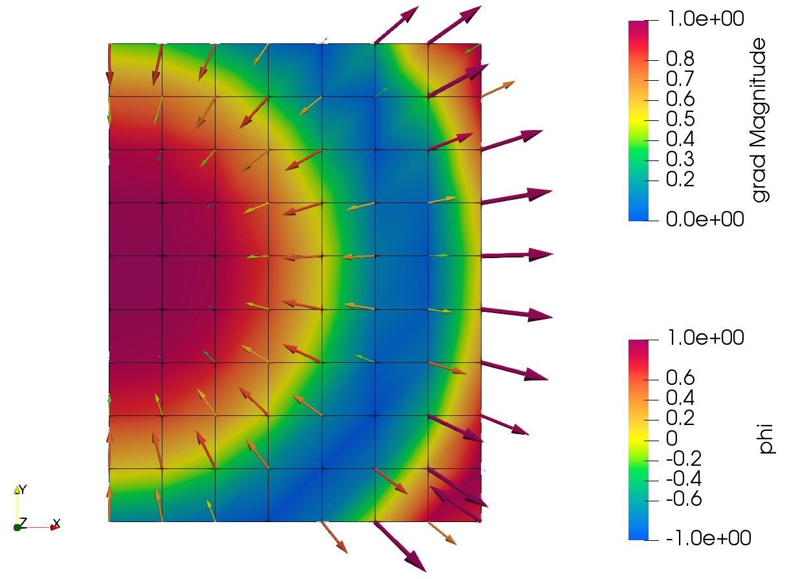
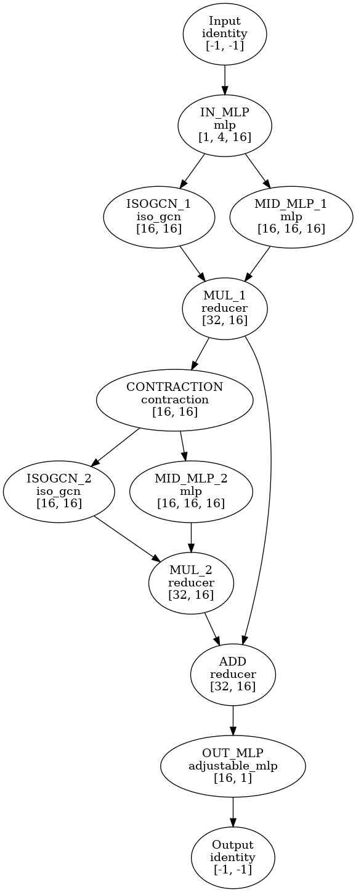
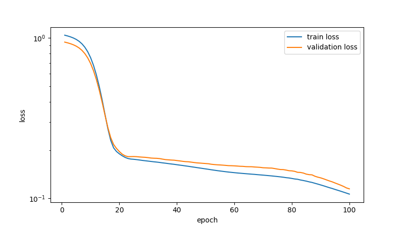
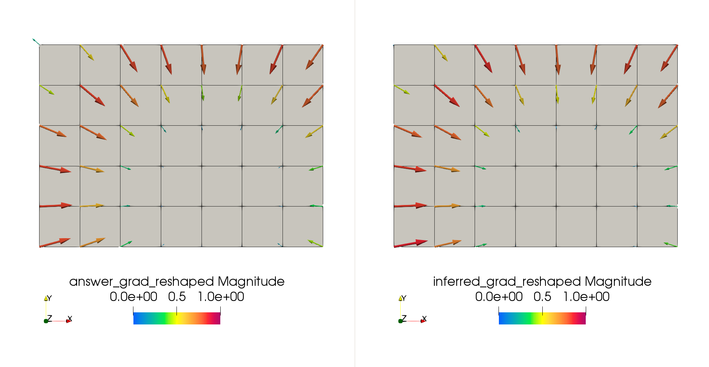

Note
Click here to download the full example code
Basic Usage of SiML¶
SiML facilitates machine learning processes, including preprocessing, learning, and prediction. We will cover the entire pipeline of a machine learning process using the gradient dataset example.
Import necessary modules including siml.
FEMIO is used to generate data.
import pathlib
import shutil
import femio
import numpy as np
import siml
Clean up old data if exists.
shutil.rmtree('00_basic_data/raw', ignore_errors=True)
shutil.rmtree('00_basic_data/interim', ignore_errors=True)
shutil.rmtree('00_basic_data/preprocessed', ignore_errors=True)
shutil.rmtree('00_basic_data/model', ignore_errors=True)
shutil.rmtree('00_basic_data/inferred', ignore_errors=True)
Data generation¶
First, we define a function to generate data and call it to create the dataset.
def generate_data(output_directory):
# Generate a simple mesh
n_x_element = np.random.randint(5, 10)
n_y_element = np.random.randint(5, 10)
n_z_element = 1
fem_data = femio.generate_brick(
'hex',
n_x_element=n_x_element,
n_y_element=n_y_element,
n_z_element=n_z_element,
x_length=n_x_element,
y_length=n_y_element,
z_length=n_z_element)
# Generate scalar field phi and the gradient field associated to it
scale = 1 / 5
nodes = np.copy(fem_data.nodes.data)
nodes[:, -1] = 0. # Make pseudo 2D
shift = np.random.rand(1, 3) / scale
shift[:, -1] = 0
square_norm = .5 * np.linalg.norm(nodes - shift, axis=1)**2
phi = np.cos(square_norm * scale)[:, None]
grad = - np.sin(square_norm * scale)[:, None] * scale * (nodes - shift)
# Write data
fem_data.nodal_data.update_data(
fem_data.nodes.ids, {'phi': phi, 'grad': grad},
allow_overwrite=False)
fem_data.write(
'ucd', output_directory / 'mesh.inp')
return
n_train_sample = 20
for i in range(n_train_sample):
generate_data(pathlib.Path(f"00_basic_data/raw/train/{i}"))
n_validation_sample = 5
for i in range(n_validation_sample):
generate_data(pathlib.Path(f"00_basic_data/raw/validation/{i}"))
n_test_data = 5
for i in range(n_validation_sample):
generate_data(pathlib.Path(f"00_basic_data/raw/test/{i}"))
Out:
Creating data: NODE
Creating data: ELEMENT
Creating data: phi
Creating data: grad
Start writing data
File written in: 00_basic_data/raw/train/0/mesh.inp
Creating data: NODE
Creating data: ELEMENT
Creating data: phi
Creating data: grad
Start writing data
File written in: 00_basic_data/raw/train/1/mesh.inp
Creating data: NODE
Creating data: ELEMENT
Creating data: phi
Creating data: grad
Start writing data
File written in: 00_basic_data/raw/train/2/mesh.inp
Creating data: NODE
Creating data: ELEMENT
Creating data: phi
Creating data: grad
Start writing data
File written in: 00_basic_data/raw/train/3/mesh.inp
Creating data: NODE
Creating data: ELEMENT
Creating data: phi
Creating data: grad
Start writing data
File written in: 00_basic_data/raw/train/4/mesh.inp
Creating data: NODE
Creating data: ELEMENT
Creating data: phi
Creating data: grad
Start writing data
File written in: 00_basic_data/raw/train/5/mesh.inp
Creating data: NODE
Creating data: ELEMENT
Creating data: phi
Creating data: grad
Start writing data
File written in: 00_basic_data/raw/train/6/mesh.inp
Creating data: NODE
Creating data: ELEMENT
Creating data: phi
Creating data: grad
Start writing data
File written in: 00_basic_data/raw/train/7/mesh.inp
Creating data: NODE
Creating data: ELEMENT
Creating data: phi
Creating data: grad
Start writing data
File written in: 00_basic_data/raw/train/8/mesh.inp
Creating data: NODE
Creating data: ELEMENT
Creating data: phi
Creating data: grad
Start writing data
File written in: 00_basic_data/raw/train/9/mesh.inp
Creating data: NODE
Creating data: ELEMENT
Creating data: phi
Creating data: grad
Start writing data
File written in: 00_basic_data/raw/train/10/mesh.inp
Creating data: NODE
Creating data: ELEMENT
Creating data: phi
Creating data: grad
Start writing data
File written in: 00_basic_data/raw/train/11/mesh.inp
Creating data: NODE
Creating data: ELEMENT
Creating data: phi
Creating data: grad
Start writing data
File written in: 00_basic_data/raw/train/12/mesh.inp
Creating data: NODE
Creating data: ELEMENT
Creating data: phi
Creating data: grad
Start writing data
File written in: 00_basic_data/raw/train/13/mesh.inp
Creating data: NODE
Creating data: ELEMENT
Creating data: phi
Creating data: grad
Start writing data
File written in: 00_basic_data/raw/train/14/mesh.inp
Creating data: NODE
Creating data: ELEMENT
Creating data: phi
Creating data: grad
Start writing data
File written in: 00_basic_data/raw/train/15/mesh.inp
Creating data: NODE
Creating data: ELEMENT
Creating data: phi
Creating data: grad
Start writing data
File written in: 00_basic_data/raw/train/16/mesh.inp
Creating data: NODE
Creating data: ELEMENT
Creating data: phi
Creating data: grad
Start writing data
File written in: 00_basic_data/raw/train/17/mesh.inp
Creating data: NODE
Creating data: ELEMENT
Creating data: phi
Creating data: grad
Start writing data
File written in: 00_basic_data/raw/train/18/mesh.inp
Creating data: NODE
Creating data: ELEMENT
Creating data: phi
Creating data: grad
Start writing data
File written in: 00_basic_data/raw/train/19/mesh.inp
Creating data: NODE
Creating data: ELEMENT
Creating data: phi
Creating data: grad
Start writing data
File written in: 00_basic_data/raw/validation/0/mesh.inp
Creating data: NODE
Creating data: ELEMENT
Creating data: phi
Creating data: grad
Start writing data
File written in: 00_basic_data/raw/validation/1/mesh.inp
Creating data: NODE
Creating data: ELEMENT
Creating data: phi
Creating data: grad
Start writing data
File written in: 00_basic_data/raw/validation/2/mesh.inp
Creating data: NODE
Creating data: ELEMENT
Creating data: phi
Creating data: grad
Start writing data
File written in: 00_basic_data/raw/validation/3/mesh.inp
Creating data: NODE
Creating data: ELEMENT
Creating data: phi
Creating data: grad
Start writing data
File written in: 00_basic_data/raw/validation/4/mesh.inp
Creating data: NODE
Creating data: ELEMENT
Creating data: phi
Creating data: grad
Start writing data
File written in: 00_basic_data/raw/test/0/mesh.inp
Creating data: NODE
Creating data: ELEMENT
Creating data: phi
Creating data: grad
Start writing data
File written in: 00_basic_data/raw/test/1/mesh.inp
Creating data: NODE
Creating data: ELEMENT
Creating data: phi
Creating data: grad
Start writing data
File written in: 00_basic_data/raw/test/2/mesh.inp
Creating data: NODE
Creating data: ELEMENT
Creating data: phi
Creating data: grad
Start writing data
File written in: 00_basic_data/raw/test/3/mesh.inp
Creating data: NODE
Creating data: ELEMENT
Creating data: phi
Creating data: grad
Start writing data
File written in: 00_basic_data/raw/test/4/mesh.inp
If the process finished successfully, the data should look as follows (visualization using ParaView).
{kind=link}

Here, we consider the task to predict the gradient field (arrows in the figure above) from the input of the scalar field (color map in the figure above).
Data preprocessing¶
Here, we extract features from the generated dataset. Data generation and feature extraction is something SiML does not manage because the library does not know what simulation to run and what features to extract. Therefore, users should write some code for these two parts, although SiML (and FEMIO) can support it.
Now, define a call-back function to extract features from the dataset.
The function takes two arguments,
femio.FEMData object representing a sample in the dataset and
pathlib.Path object representing an output directory.
def conversion_function(fem_data, raw_directory):
node = fem_data.nodes.data
phi = fem_data.nodal_data.get_attribute_data('phi')
grad = fem_data.nodal_data.get_attribute_data('grad')[..., None]
# Generate renormalized adjacency matrix based on Kipf and Welling 2016
nodal_adj = fem_data.calculate_adjacency_matrix_node()
nodal_nadj = siml.prepost.normalize_adjacency_matrix(nodal_adj)
# Generate IsoAM based on Horie et al. 2020
nodal_isoam_x, nodal_isoam_y, nodal_isoam_z = \
fem_data.calculate_spatial_gradient_adjacency_matrices(
'nodal', n_hop=1, moment_matrix=True)
dict_data = {
'node': node,
'phi': phi,
'grad': grad,
'nodal_nadj': nodal_nadj,
'nodal_isoam_x': nodal_isoam_x,
'nodal_isoam_y': nodal_isoam_y,
'nodal_isoam_z': nodal_isoam_z,
}
return dict_data
From here, SiML can manage most of the process.
Please download
data.yml
file and place it in the 00_basic_data directory.
SiML uses YAML files as setting files to control its behavior.
Basically, each setting component can be omitted, and if so,
the default setting will be adopted.
The relevant contents of the YAML file are as follows.
data: # Data directory setting
raw: 00_basic_data/raw # Row data
interim: 00_basic_data/interim # Extracted features
preprocessed: 00_basic_data/preprocessed # Preprocessed data
inferred: 00_basic_data/inferred # Predicted data
conversion: # Feature extraction setting
file_type: 'ucd' # File type to be read
required_file_names: # Files to be regarded as data
- '*.inp'
As can be seen, the structure of the directory follows that of the Cookiecutter Data Science.
Now, generate a RawConverter object by feeding the
YAML file and perform feature extraction.
settings_yaml = pathlib.Path('00_basic_data/data.yml')
raw_converter = siml.prepost.RawConverter.read_settings(
settings_yaml, conversion_function=conversion_function)
raw_converter.convert()
Out:
[PosixPath('00_basic_data/raw')]
Next, perform preprocessing, e.g., scaling of the data. The relevant part of the YAML file is as follows.
preprocess: # Data scaling setting
node: std_scale # Standardization without subtraction of the mean
phi: standardize # Standardization
grad: std_scale
nodal_nadj: identity # No scaling
nodal_isoam_x: identity
nodal_isoam_y: identity
nodal_isoam_z: identity
preprocessor = siml.prepost.Preprocessor.read_settings(settings_yaml)
preprocessor.preprocess_interim_data()
Out:
{'phi': {'method': 'standardize', 'componentwise': False, 'preprocess_converter': <siml.util.PreprocessConverter object at 0x7f26f392a0d0>, 'power': 1.0, 'other_components': []}, 'grad': {'method': 'std_scale', 'componentwise': False, 'preprocess_converter': <siml.util.PreprocessConverter object at 0x7f26f38c51d0>, 'power': 1.0, 'other_components': []}, 'nodal_isoam_y': {'method': 'identity', 'componentwise': False, 'preprocess_converter': <siml.util.PreprocessConverter object at 0x7f26f410dc10>, 'power': 1.0, 'other_components': []}, 'node': {'method': 'std_scale', 'componentwise': False, 'preprocess_converter': <siml.util.PreprocessConverter object at 0x7f26f42bf2d0>, 'power': 1.0, 'other_components': []}, 'nodal_nadj': {'method': 'identity', 'componentwise': False, 'preprocess_converter': <siml.util.PreprocessConverter object at 0x7f26f38c5410>, 'power': 1.0, 'other_components': []}, 'nodal_isoam_z': {'method': 'identity', 'componentwise': False, 'preprocess_converter': <siml.util.PreprocessConverter object at 0x7f26f38c2f90>, 'power': 1.0, 'other_components': []}, 'nodal_isoam_x': {'method': 'identity', 'componentwise': False, 'preprocess_converter': <siml.util.PreprocessConverter object at 0x7f26f38c2690>, 'power': 1.0, 'other_components': []}}
Training¶
Then, we move on to the training.
Please download
isogcn.yml
file and place it in the 00_basic_data directory.
In the YAML file, the setting for the trainer is written as follows.
trainer:
output_directory: 00_basic_data/model # Output directory
inputs: # Input data specification
- name: phi # Input data name
dim: 1 # phi's dimention
support_input: # Support inputs e.g. adjacency matrix
- nodal_isoam_x
- nodal_isoam_y
- nodal_isoam_z
outputs:
- name: grad # Output data name
dim: 1 # gradient's dimention (the shape is in [n, 3, 1], so 1)
prune: false
n_epoch: 100 # The nmber of epochs
log_trigger_epoch: 1 # The period to log the training
stop_trigger_epoch: 5 # The period to condider early stopping
seed: 0 # The rondom seed
lazy: false # If true, data is read lazily rather than on-memory
batch_size: 4 # The size of the batch
num_workers: 0 # The number of processes to load data (0 means serial)
figure_format: png # Format of the output figures (the default is pdf)
In the same file, the setting for the machine learning model is also written. In this example, we use IsoGCN (Horie et al. ICLR 2021). We can try many machine learning trials with various training and model settings by editing the YAML file.
isogcn_yaml = pathlib.Path('00_basic_data/isogcn.yml')
trainer = siml.trainer.Trainer(isogcn_yaml)
trainer.train()
Out:
Output directory: 00_basic_data/model
Merge sparse: False
Factor: 1.0
Matrix multiplication mode: A (HW)
Merge sparse: False
Factor: 1.0
Matrix multiplication mode: A (HW)
Loading data
0%| | 0/20 [00:00<?, ?it/s]
80%|#################################6 | 16/20 [00:00<00:00, 156.43it/s]
Loading data
0%| | 0/5 [00:00<?, ?it/s]
Loading data
0%| | 0/5 [00:00<?, ?it/s]
num_workers for data_loader: 0
epoch train_loss validation_loss elapsed_time
loss: 0.00000e+00: 0%| | 0/5 [00:00<?, ?it/s]
evaluating: 0%| | 0/7 [00:00<?, ?it/s]
1 1.04190e+00 9.43370e-01 0.07
loss: 0.00000e+00: 0%| | 0/5 [00:00<?, ?it/s]
loss: 1.07991e+00: 20%|#####2 | 1/5 [00:00<00:00, 4.04it/s]
evaluating: 0%| | 0/7 [00:00<?, ?it/s]
2 1.03043e+00 9.33405e-01 0.38
loss: 0.00000e+00: 0%| | 0/5 [00:00<?, ?it/s]
loss: 9.47202e-01: 20%|#####2 | 1/5 [00:00<00:00, 6.28it/s]
evaluating: 0%| | 0/7 [00:00<?, ?it/s]
3 1.01708e+00 9.21812e-01 0.59
loss: 0.00000e+00: 0%| | 0/5 [00:00<?, ?it/s]
loss: 1.05890e+00: 20%|#####2 | 1/5 [00:00<00:00, 5.57it/s]
evaluating: 0%| | 0/7 [00:00<?, ?it/s]
4 1.00088e+00 9.07751e-01 0.83
loss: 0.00000e+00: 0%| | 0/5 [00:00<?, ?it/s]
loss: 8.20733e-01: 20%|#####2 | 1/5 [00:00<00:00, 5.75it/s]
evaluating: 0%| | 0/7 [00:00<?, ?it/s]
5 9.80440e-01 8.90021e-01 1.06
loss: 0.00000e+00: 0%| | 0/5 [00:00<?, ?it/s]
loss: 9.86661e-01: 20%|#####2 | 1/5 [00:00<00:00, 5.18it/s]
evaluating: 0%| | 0/7 [00:00<?, ?it/s]
6 9.54144e-01 8.67220e-01 1.31
loss: 0.00000e+00: 0%| | 0/5 [00:00<?, ?it/s]
loss: 8.26196e-01: 20%|#####2 | 1/5 [00:00<00:00, 5.46it/s]
evaluating: 0%| | 0/7 [00:00<?, ?it/s]
7 9.20001e-01 8.37626e-01 1.56
loss: 0.00000e+00: 0%| | 0/5 [00:00<?, ?it/s]
loss: 8.21832e-01: 20%|#####2 | 1/5 [00:00<00:01, 3.09it/s]
evaluating: 0%| | 0/7 [00:00<?, ?it/s]
8 8.76057e-01 7.99554e-01 1.94
loss: 0.00000e+00: 0%| | 0/5 [00:00<?, ?it/s]
loss: 8.79094e-01: 20%|#####2 | 1/5 [00:00<00:00, 5.43it/s]
evaluating: 0%| | 0/7 [00:00<?, ?it/s]
9 8.21074e-01 7.51905e-01 2.18
loss: 0.00000e+00: 0%| | 0/5 [00:00<?, ?it/s]
loss: 8.45566e-01: 20%|#####2 | 1/5 [00:00<00:00, 5.36it/s]
evaluating: 0%| | 0/7 [00:00<?, ?it/s]
10 7.54045e-01 6.93838e-01 2.43
loss: 0.00000e+00: 0%| | 0/5 [00:00<?, ?it/s]
loss: 7.56566e-01: 20%|#####2 | 1/5 [00:00<00:00, 5.46it/s]
evaluating: 0%| | 0/7 [00:00<?, ?it/s]
11 6.75844e-01 6.26094e-01 2.67
loss: 0.00000e+00: 0%| | 0/5 [00:00<?, ?it/s]
loss: 5.36718e-01: 20%|#####2 | 1/5 [00:00<00:00, 5.44it/s]
evaluating: 0%| | 0/7 [00:00<?, ?it/s]
12 5.89694e-01 5.51519e-01 2.91
loss: 0.00000e+00: 0%| | 0/5 [00:00<?, ?it/s]
loss: 4.41629e-01: 20%|#####2 | 1/5 [00:00<00:00, 5.16it/s]
evaluating: 0%| | 0/7 [00:00<?, ?it/s]
13 4.99823e-01 4.73748e-01 3.17
loss: 0.00000e+00: 0%| | 0/5 [00:00<?, ?it/s]
loss: 2.68133e-01: 20%|#####2 | 1/5 [00:00<00:00, 4.94it/s]
evaluating: 0%| | 0/7 [00:00<?, ?it/s]
14 4.12523e-01 3.98225e-01 3.43
loss: 0.00000e+00: 0%| | 0/5 [00:00<?, ?it/s]
loss: 4.36129e-01: 20%|#####2 | 1/5 [00:00<00:01, 3.21it/s]
evaluating: 0%| | 0/7 [00:00<?, ?it/s]
15 3.34261e-01 3.30705e-01 3.80
loss: 0.00000e+00: 0%| | 0/5 [00:00<?, ?it/s]
loss: 3.31812e-01: 20%|#####2 | 1/5 [00:00<00:00, 5.35it/s]
evaluating: 0%| | 0/7 [00:00<?, ?it/s]
16 2.72009e-01 2.76465e-01 4.05
loss: 0.00000e+00: 0%| | 0/5 [00:00<?, ?it/s]
loss: 1.80035e-01: 20%|#####2 | 1/5 [00:00<00:00, 4.99it/s]
evaluating: 0%| | 0/7 [00:00<?, ?it/s]
17 2.29704e-01 2.38939e-01 4.31
loss: 0.00000e+00: 0%| | 0/5 [00:00<?, ?it/s]
loss: 1.03199e-01: 20%|#####2 | 1/5 [00:00<00:00, 5.06it/s]
evaluating: 0%| | 0/7 [00:00<?, ?it/s]
18 2.06478e-01 2.16715e-01 4.56
loss: 0.00000e+00: 0%| | 0/5 [00:00<?, ?it/s]
loss: 6.39081e-02: 20%|#####2 | 1/5 [00:00<00:00, 4.94it/s]
evaluating: 0%| | 0/7 [00:00<?, ?it/s]
19 1.95986e-01 2.04751e-01 4.83
loss: 0.00000e+00: 0%| | 0/5 [00:00<?, ?it/s]
loss: 1.69054e-01: 20%|#####2 | 1/5 [00:00<00:00, 4.91it/s]
evaluating: 0%| | 0/7 [00:00<?, ?it/s]
20 1.89483e-01 1.95693e-01 5.09
loss: 0.00000e+00: 0%| | 0/5 [00:00<?, ?it/s]
loss: 1.58177e-01: 20%|#####2 | 1/5 [00:00<00:00, 4.83it/s]
evaluating: 0%| | 0/7 [00:00<?, ?it/s]
21 1.84305e-01 1.88610e-01 5.36
loss: 0.00000e+00: 0%| | 0/5 [00:00<?, ?it/s]
loss: 2.81880e-01: 20%|#####2 | 1/5 [00:00<00:00, 4.78it/s]
evaluating: 0%| | 0/7 [00:00<?, ?it/s]
22 1.80023e-01 1.84127e-01 5.62
loss: 0.00000e+00: 0%| | 0/5 [00:00<?, ?it/s]
loss: 1.77249e-01: 20%|#####2 | 1/5 [00:00<00:01, 3.10it/s]
evaluating: 0%| | 0/7 [00:00<?, ?it/s]
23 1.77207e-01 1.82020e-01 6.01
loss: 0.00000e+00: 0%| | 0/5 [00:00<?, ?it/s]
loss: 1.91703e-01: 20%|#####2 | 1/5 [00:00<00:00, 5.08it/s]
evaluating: 0%| | 0/7 [00:00<?, ?it/s]
24 1.75778e-01 1.82093e-01 6.27
loss: 0.00000e+00: 0%| | 0/5 [00:00<?, ?it/s]
loss: 1.88003e-01: 20%|#####2 | 1/5 [00:00<00:00, 4.99it/s]
evaluating: 0%| | 0/7 [00:00<?, ?it/s]
25 1.75181e-01 1.82274e-01 6.53
loss: 0.00000e+00: 0%| | 0/5 [00:00<?, ?it/s]
loss: 1.97497e-01: 20%|#####2 | 1/5 [00:00<00:00, 5.03it/s]
evaluating: 0%| | 0/7 [00:00<?, ?it/s]
26 1.74390e-01 1.81948e-01 6.79
loss: 0.00000e+00: 0%| | 0/5 [00:00<?, ?it/s]
loss: 1.55367e-01: 20%|#####2 | 1/5 [00:00<00:00, 5.03it/s]
evaluating: 0%| | 0/7 [00:00<?, ?it/s]
27 1.73415e-01 1.81185e-01 7.04
loss: 0.00000e+00: 0%| | 0/5 [00:00<?, ?it/s]
loss: 1.93773e-01: 20%|#####2 | 1/5 [00:00<00:00, 5.05it/s]
evaluating: 0%| | 0/7 [00:00<?, ?it/s]
28 1.72389e-01 1.80641e-01 7.30
loss: 0.00000e+00: 0%| | 0/5 [00:00<?, ?it/s]
loss: 2.38506e-01: 20%|#####2 | 1/5 [00:00<00:00, 5.03it/s]
evaluating: 0%| | 0/7 [00:00<?, ?it/s]
29 1.71551e-01 1.80200e-01 7.56
loss: 0.00000e+00: 0%| | 0/5 [00:00<?, ?it/s]
loss: 1.65133e-01: 20%|#####2 | 1/5 [00:00<00:01, 3.00it/s]
evaluating: 0%| | 0/7 [00:00<?, ?it/s]
30 1.70703e-01 1.79397e-01 7.95
loss: 0.00000e+00: 0%| | 0/5 [00:00<?, ?it/s]
loss: 1.95078e-01: 20%|#####2 | 1/5 [00:00<00:00, 4.93it/s]
evaluating: 0%| | 0/7 [00:00<?, ?it/s]
31 1.69858e-01 1.78359e-01 8.21
loss: 0.00000e+00: 0%| | 0/5 [00:00<?, ?it/s]
loss: 1.35039e-01: 20%|#####2 | 1/5 [00:00<00:00, 4.92it/s]
evaluating: 0%| | 0/7 [00:00<?, ?it/s]
32 1.69012e-01 1.77886e-01 8.48
loss: 0.00000e+00: 0%| | 0/5 [00:00<?, ?it/s]
loss: 1.29797e-01: 20%|#####2 | 1/5 [00:00<00:00, 4.96it/s]
evaluating: 0%| | 0/7 [00:00<?, ?it/s]
33 1.68294e-01 1.77668e-01 8.74
loss: 0.00000e+00: 0%| | 0/5 [00:00<?, ?it/s]
loss: 2.01182e-01: 20%|#####2 | 1/5 [00:00<00:00, 4.95it/s]
evaluating: 0%| | 0/7 [00:00<?, ?it/s]
34 1.67440e-01 1.76985e-01 9.00
loss: 0.00000e+00: 0%| | 0/5 [00:00<?, ?it/s]
loss: 8.84913e-02: 20%|#####2 | 1/5 [00:00<00:00, 4.87it/s]
evaluating: 0%| | 0/7 [00:00<?, ?it/s]
35 1.66485e-01 1.75638e-01 9.27
loss: 0.00000e+00: 0%| | 0/5 [00:00<?, ?it/s]
loss: 1.77195e-01: 20%|#####2 | 1/5 [00:00<00:00, 4.85it/s]
evaluating: 0%| | 0/7 [00:00<?, ?it/s]
36 1.65641e-01 1.74463e-01 9.54
loss: 0.00000e+00: 0%| | 0/5 [00:00<?, ?it/s]
loss: 1.15476e-01: 20%|#####2 | 1/5 [00:00<00:01, 3.02it/s]
evaluating: 0%| | 0/7 [00:00<?, ?it/s]
37 1.64725e-01 1.73873e-01 9.93
loss: 0.00000e+00: 0%| | 0/5 [00:00<?, ?it/s]
loss: 1.24176e-01: 20%|#####2 | 1/5 [00:00<00:00, 4.83it/s]
evaluating: 0%| | 0/7 [00:00<?, ?it/s]
38 1.63848e-01 1.73310e-01 10.19
loss: 0.00000e+00: 0%| | 0/5 [00:00<?, ?it/s]
loss: 1.98095e-01: 20%|#####2 | 1/5 [00:00<00:00, 4.85it/s]
evaluating: 0%| | 0/7 [00:00<?, ?it/s]
39 1.63032e-01 1.72951e-01 10.46
loss: 0.00000e+00: 0%| | 0/5 [00:00<?, ?it/s]
loss: 1.42870e-01: 20%|#####2 | 1/5 [00:00<00:00, 4.79it/s]
evaluating: 0%| | 0/7 [00:00<?, ?it/s]
40 1.62082e-01 1.72065e-01 10.73
loss: 0.00000e+00: 0%| | 0/5 [00:00<?, ?it/s]
loss: 1.73107e-01: 20%|#####2 | 1/5 [00:00<00:00, 4.81it/s]
evaluating: 0%| | 0/7 [00:00<?, ?it/s]
41 1.61149e-01 1.71165e-01 11.00
loss: 0.00000e+00: 0%| | 0/5 [00:00<?, ?it/s]
loss: 1.07957e-01: 20%|#####2 | 1/5 [00:00<00:00, 4.77it/s]
evaluating: 0%| | 0/7 [00:00<?, ?it/s]
42 1.60284e-01 1.70181e-01 11.26
loss: 0.00000e+00: 0%| | 0/5 [00:00<?, ?it/s]
loss: 1.81541e-01: 20%|#####2 | 1/5 [00:00<00:00, 5.12it/s]
evaluating: 0%| | 0/7 [00:00<?, ?it/s]
43 1.59312e-01 1.69411e-01 11.52
loss: 0.00000e+00: 0%| | 0/5 [00:00<?, ?it/s]
loss: 6.99450e-02: 20%|#####2 | 1/5 [00:00<00:01, 3.08it/s]
evaluating: 0%| | 0/7 [00:00<?, ?it/s]
44 1.58394e-01 1.69101e-01 11.90
loss: 0.00000e+00: 0%| | 0/5 [00:00<?, ?it/s]
loss: 1.30635e-01: 20%|#####2 | 1/5 [00:00<00:00, 5.07it/s]
evaluating: 0%| | 0/7 [00:00<?, ?it/s]
45 1.57392e-01 1.68173e-01 12.16
loss: 0.00000e+00: 0%| | 0/5 [00:00<?, ?it/s]
loss: 2.13395e-01: 20%|#####2 | 1/5 [00:00<00:00, 5.07it/s]
evaluating: 0%| | 0/7 [00:00<?, ?it/s]
46 1.56431e-01 1.67230e-01 12.42
loss: 0.00000e+00: 0%| | 0/5 [00:00<?, ?it/s]
loss: 8.59002e-02: 20%|#####2 | 1/5 [00:00<00:00, 5.10it/s]
evaluating: 0%| | 0/7 [00:00<?, ?it/s]
47 1.55454e-01 1.66404e-01 12.67
loss: 0.00000e+00: 0%| | 0/5 [00:00<?, ?it/s]
loss: 1.26859e-01: 20%|#####2 | 1/5 [00:00<00:00, 5.11it/s]
evaluating: 0%| | 0/7 [00:00<?, ?it/s]
48 1.54528e-01 1.65920e-01 12.93
loss: 0.00000e+00: 0%| | 0/5 [00:00<?, ?it/s]
loss: 1.25508e-01: 20%|#####2 | 1/5 [00:00<00:00, 5.02it/s]
evaluating: 0%| | 0/7 [00:00<?, ?it/s]
49 1.53562e-01 1.65351e-01 13.19
loss: 0.00000e+00: 0%| | 0/5 [00:00<?, ?it/s]
loss: 6.35084e-02: 20%|#####2 | 1/5 [00:00<00:00, 5.05it/s]
evaluating: 0%| | 0/7 [00:00<?, ?it/s]
50 1.52620e-01 1.64870e-01 13.44
loss: 0.00000e+00: 0%| | 0/5 [00:00<?, ?it/s]
loss: 9.96971e-02: 20%|#####2 | 1/5 [00:00<00:01, 3.09it/s]
evaluating: 0%| | 0/7 [00:00<?, ?it/s]
51 1.51692e-01 1.64344e-01 13.83
loss: 0.00000e+00: 0%| | 0/5 [00:00<?, ?it/s]
loss: 5.86497e-02: 20%|#####2 | 1/5 [00:00<00:00, 4.97it/s]
evaluating: 0%| | 0/7 [00:00<?, ?it/s]
52 1.50711e-01 1.63124e-01 14.09
loss: 0.00000e+00: 0%| | 0/5 [00:00<?, ?it/s]
loss: 1.13652e-01: 20%|#####2 | 1/5 [00:00<00:00, 5.04it/s]
evaluating: 0%| | 0/7 [00:00<?, ?it/s]
53 1.49790e-01 1.62435e-01 14.35
loss: 0.00000e+00: 0%| | 0/5 [00:00<?, ?it/s]
loss: 1.03173e-01: 20%|#####2 | 1/5 [00:00<00:00, 5.00it/s]
evaluating: 0%| | 0/7 [00:00<?, ?it/s]
54 1.48908e-01 1.61912e-01 14.61
loss: 0.00000e+00: 0%| | 0/5 [00:00<?, ?it/s]
loss: 1.20120e-01: 20%|#####2 | 1/5 [00:00<00:00, 5.04it/s]
evaluating: 0%| | 0/7 [00:00<?, ?it/s]
55 1.48108e-01 1.61541e-01 14.87
loss: 0.00000e+00: 0%| | 0/5 [00:00<?, ?it/s]
loss: 1.55075e-01: 20%|#####2 | 1/5 [00:00<00:00, 5.06it/s]
evaluating: 0%| | 0/7 [00:00<?, ?it/s]
56 1.47305e-01 1.61049e-01 15.12
loss: 0.00000e+00: 0%| | 0/5 [00:00<?, ?it/s]
loss: 1.00436e-01: 20%|#####2 | 1/5 [00:00<00:00, 5.03it/s]
evaluating: 0%| | 0/7 [00:00<?, ?it/s]
57 1.46544e-01 1.60486e-01 15.38
loss: 0.00000e+00: 0%| | 0/5 [00:00<?, ?it/s]
loss: 2.37518e-01: 20%|#####2 | 1/5 [00:00<00:01, 3.05it/s]
evaluating: 0%| | 0/7 [00:00<?, ?it/s]
58 1.45831e-01 1.59908e-01 15.77
loss: 0.00000e+00: 0%| | 0/5 [00:00<?, ?it/s]
loss: 1.81065e-01: 20%|#####2 | 1/5 [00:00<00:00, 4.94it/s]
evaluating: 0%| | 0/7 [00:00<?, ?it/s]
59 1.45182e-01 1.59766e-01 16.03
loss: 0.00000e+00: 0%| | 0/5 [00:00<?, ?it/s]
loss: 1.18931e-01: 20%|#####2 | 1/5 [00:00<00:00, 4.91it/s]
evaluating: 0%| | 0/7 [00:00<?, ?it/s]
60 1.44583e-01 1.59441e-01 16.30
loss: 0.00000e+00: 0%| | 0/5 [00:00<?, ?it/s]
loss: 1.63415e-01: 20%|#####2 | 1/5 [00:00<00:00, 4.88it/s]
evaluating: 0%| | 0/7 [00:00<?, ?it/s]
61 1.43984e-01 1.58994e-01 16.56
loss: 0.00000e+00: 0%| | 0/5 [00:00<?, ?it/s]
loss: 1.59667e-01: 20%|#####2 | 1/5 [00:00<00:00, 4.91it/s]
evaluating: 0%| | 0/7 [00:00<?, ?it/s]
62 1.43444e-01 1.58467e-01 16.83
loss: 0.00000e+00: 0%| | 0/5 [00:00<?, ?it/s]
loss: 1.99467e-01: 20%|#####2 | 1/5 [00:00<00:00, 4.92it/s]
evaluating: 0%| | 0/7 [00:00<?, ?it/s]
63 1.42934e-01 1.58252e-01 17.09
loss: 0.00000e+00: 0%| | 0/5 [00:00<?, ?it/s]
loss: 1.40447e-01: 20%|#####2 | 1/5 [00:00<00:00, 4.93it/s]
evaluating: 0%| | 0/7 [00:00<?, ?it/s]
64 1.42460e-01 1.57654e-01 17.35
loss: 0.00000e+00: 0%| | 0/5 [00:00<?, ?it/s]
loss: 1.81684e-01: 20%|#####2 | 1/5 [00:00<00:01, 3.01it/s]
evaluating: 0%| | 0/7 [00:00<?, ?it/s]
65 1.41977e-01 1.57494e-01 17.75
loss: 0.00000e+00: 0%| | 0/5 [00:00<?, ?it/s]
loss: 1.79981e-01: 20%|#####2 | 1/5 [00:00<00:00, 4.88it/s]
evaluating: 0%| | 0/7 [00:00<?, ?it/s]
66 1.41490e-01 1.57415e-01 18.01
loss: 0.00000e+00: 0%| | 0/5 [00:00<?, ?it/s]
loss: 1.36030e-01: 20%|#####2 | 1/5 [00:00<00:00, 4.90it/s]
evaluating: 0%| | 0/7 [00:00<?, ?it/s]
67 1.41061e-01 1.56853e-01 18.28
loss: 0.00000e+00: 0%| | 0/5 [00:00<?, ?it/s]
loss: 2.12624e-01: 20%|#####2 | 1/5 [00:00<00:00, 4.82it/s]
evaluating: 0%| | 0/7 [00:00<?, ?it/s]
68 1.40519e-01 1.56451e-01 18.55
loss: 0.00000e+00: 0%| | 0/5 [00:00<?, ?it/s]
loss: 2.19677e-01: 20%|#####2 | 1/5 [00:00<00:00, 4.87it/s]
evaluating: 0%| | 0/7 [00:00<?, ?it/s]
69 1.40031e-01 1.55999e-01 18.81
loss: 0.00000e+00: 0%| | 0/5 [00:00<?, ?it/s]
loss: 2.01547e-01: 20%|#####2 | 1/5 [00:00<00:00, 4.86it/s]
evaluating: 0%| | 0/7 [00:00<?, ?it/s]
70 1.39542e-01 1.55162e-01 19.08
loss: 0.00000e+00: 0%| | 0/5 [00:00<?, ?it/s]
loss: 1.95661e-01: 20%|#####2 | 1/5 [00:00<00:00, 4.17it/s]
evaluating: 0%| | 0/7 [00:00<?, ?it/s]
71 1.39005e-01 1.54899e-01 19.38
loss: 0.00000e+00: 0%| | 0/5 [00:00<?, ?it/s]
loss: 1.20404e-01: 20%|#####2 | 1/5 [00:00<00:01, 3.00it/s]
evaluating: 0%| | 0/7 [00:00<?, ?it/s]
72 1.38503e-01 1.54525e-01 19.77
loss: 0.00000e+00: 0%| | 0/5 [00:00<?, ?it/s]
loss: 1.43463e-01: 20%|#####2 | 1/5 [00:00<00:00, 4.84it/s]
evaluating: 0%| | 0/7 [00:00<?, ?it/s]
73 1.37961e-01 1.54404e-01 20.04
loss: 0.00000e+00: 0%| | 0/5 [00:00<?, ?it/s]
loss: 1.12940e-01: 20%|#####2 | 1/5 [00:00<00:00, 4.78it/s]
evaluating: 0%| | 0/7 [00:00<?, ?it/s]
74 1.37334e-01 1.53348e-01 20.31
loss: 0.00000e+00: 0%| | 0/5 [00:00<?, ?it/s]
loss: 1.10067e-01: 20%|#####2 | 1/5 [00:00<00:00, 4.82it/s]
evaluating: 0%| | 0/7 [00:00<?, ?it/s]
75 1.36755e-01 1.52215e-01 20.58
loss: 0.00000e+00: 0%| | 0/5 [00:00<?, ?it/s]
loss: 1.08268e-01: 20%|#####2 | 1/5 [00:00<00:00, 4.71it/s]
evaluating: 0%| | 0/7 [00:00<?, ?it/s]
76 1.36128e-01 1.51244e-01 20.86
loss: 0.00000e+00: 0%| | 0/5 [00:00<?, ?it/s]
loss: 1.51975e-01: 20%|#####2 | 1/5 [00:00<00:00, 4.81it/s]
evaluating: 0%| | 0/7 [00:00<?, ?it/s]
77 1.35410e-01 1.51109e-01 21.12
loss: 0.00000e+00: 0%| | 0/5 [00:00<?, ?it/s]
loss: 1.54241e-01: 20%|#####2 | 1/5 [00:00<00:00, 4.75it/s]
evaluating: 0%| | 0/7 [00:00<?, ?it/s]
78 1.34572e-01 1.50038e-01 21.39
loss: 0.00000e+00: 0%| | 0/5 [00:00<?, ?it/s]
loss: 9.28696e-02: 20%|#####2 | 1/5 [00:00<00:01, 2.96it/s]
evaluating: 0%| | 0/7 [00:00<?, ?it/s]
79 1.33988e-01 1.48716e-01 21.79
loss: 0.00000e+00: 0%| | 0/5 [00:00<?, ?it/s]
loss: 2.10885e-01: 20%|#####2 | 1/5 [00:00<00:00, 4.74it/s]
evaluating: 0%| | 0/7 [00:00<?, ?it/s]
80 1.33050e-01 1.48348e-01 22.07
loss: 0.00000e+00: 0%| | 0/5 [00:00<?, ?it/s]
loss: 7.56529e-02: 20%|#####2 | 1/5 [00:00<00:00, 4.70it/s]
evaluating: 0%| | 0/7 [00:00<?, ?it/s]
81 1.32062e-01 1.47329e-01 22.36
loss: 0.00000e+00: 0%| | 0/5 [00:00<?, ?it/s]
loss: 1.82706e-01: 20%|#####2 | 1/5 [00:00<00:00, 4.68it/s]
evaluating: 0%| | 0/7 [00:00<?, ?it/s]
82 1.31466e-01 1.45280e-01 22.64
loss: 0.00000e+00: 0%| | 0/5 [00:00<?, ?it/s]
loss: 1.29707e-01: 20%|#####2 | 1/5 [00:00<00:00, 4.72it/s]
evaluating: 0%| | 0/7 [00:00<?, ?it/s]
83 1.30147e-01 1.45022e-01 22.91
loss: 0.00000e+00: 0%| | 0/5 [00:00<?, ?it/s]
loss: 1.33263e-01: 20%|#####2 | 1/5 [00:00<00:00, 5.04it/s]
evaluating: 0%| | 0/7 [00:00<?, ?it/s]
84 1.29138e-01 1.43773e-01 23.17
loss: 0.00000e+00: 0%| | 0/5 [00:00<?, ?it/s]
loss: 1.19113e-01: 20%|#####2 | 1/5 [00:00<00:00, 5.04it/s]
evaluating: 0%| | 0/7 [00:00<?, ?it/s]
85 1.28047e-01 1.41604e-01 23.43
loss: 0.00000e+00: 0%| | 0/5 [00:00<?, ?it/s]
loss: 2.08581e-01: 20%|#####2 | 1/5 [00:00<00:01, 3.35it/s]
evaluating: 0%| | 0/7 [00:00<?, ?it/s]
86 1.26721e-01 1.40501e-01 23.79
loss: 0.00000e+00: 0%| | 0/5 [00:00<?, ?it/s]
loss: 9.88205e-02: 20%|#####2 | 1/5 [00:00<00:00, 5.93it/s]
evaluating: 0%| | 0/7 [00:00<?, ?it/s]
87 1.25644e-01 1.40138e-01 24.02
loss: 0.00000e+00: 0%| | 0/5 [00:00<?, ?it/s]
loss: 2.05233e-01: 20%|#####2 | 1/5 [00:00<00:00, 5.94it/s]
evaluating: 0%| | 0/7 [00:00<?, ?it/s]
88 1.24135e-01 1.37395e-01 24.25
loss: 0.00000e+00: 0%| | 0/5 [00:00<?, ?it/s]
loss: 1.38561e-01: 20%|#####2 | 1/5 [00:00<00:00, 5.91it/s]
evaluating: 0%| | 0/7 [00:00<?, ?it/s]
89 1.22728e-01 1.35577e-01 24.48
loss: 0.00000e+00: 0%| | 0/5 [00:00<?, ?it/s]
loss: 1.39509e-01: 20%|#####2 | 1/5 [00:00<00:00, 5.99it/s]
evaluating: 0%| | 0/7 [00:00<?, ?it/s]
90 1.21224e-01 1.34215e-01 24.71
loss: 0.00000e+00: 0%| | 0/5 [00:00<?, ?it/s]
loss: 1.20537e-01: 20%|#####2 | 1/5 [00:00<00:00, 6.08it/s]
evaluating: 0%| | 0/7 [00:00<?, ?it/s]
91 1.19743e-01 1.32403e-01 24.93
loss: 0.00000e+00: 0%| | 0/5 [00:00<?, ?it/s]
loss: 1.14644e-01: 20%|#####2 | 1/5 [00:00<00:00, 6.02it/s]
evaluating: 0%| | 0/7 [00:00<?, ?it/s]
92 1.18155e-01 1.30402e-01 25.16
loss: 0.00000e+00: 0%| | 0/5 [00:00<?, ?it/s]
loss: 1.27937e-01: 20%|#####2 | 1/5 [00:00<00:00, 6.08it/s]
evaluating: 0%| | 0/7 [00:00<?, ?it/s]
93 1.16611e-01 1.28464e-01 25.38
loss: 0.00000e+00: 0%| | 0/5 [00:00<?, ?it/s]
loss: 1.40433e-01: 20%|#####2 | 1/5 [00:00<00:01, 3.44it/s]
evaluating: 0%| | 0/7 [00:00<?, ?it/s]
94 1.15230e-01 1.26785e-01 25.73
loss: 0.00000e+00: 0%| | 0/5 [00:00<?, ?it/s]
loss: 1.68406e-01: 20%|#####2 | 1/5 [00:00<00:00, 6.03it/s]
evaluating: 0%| | 0/7 [00:00<?, ?it/s]
95 1.13654e-01 1.24697e-01 25.96
loss: 0.00000e+00: 0%| | 0/5 [00:00<?, ?it/s]
loss: 9.42382e-02: 20%|#####2 | 1/5 [00:00<00:00, 6.02it/s]
evaluating: 0%| | 0/7 [00:00<?, ?it/s]
96 1.12208e-01 1.22746e-01 26.19
loss: 0.00000e+00: 0%| | 0/5 [00:00<?, ?it/s]
loss: 1.17994e-01: 20%|#####2 | 1/5 [00:00<00:00, 5.89it/s]
evaluating: 0%| | 0/7 [00:00<?, ?it/s]
97 1.10755e-01 1.20753e-01 26.42
loss: 0.00000e+00: 0%| | 0/5 [00:00<?, ?it/s]
loss: 1.81911e-01: 20%|#####2 | 1/5 [00:00<00:00, 5.33it/s]
evaluating: 0%| | 0/7 [00:00<?, ?it/s]
98 1.09253e-01 1.18603e-01 26.66
loss: 0.00000e+00: 0%| | 0/5 [00:00<?, ?it/s]
loss: 1.36249e-01: 20%|#####2 | 1/5 [00:00<00:00, 5.31it/s]
evaluating: 0%| | 0/7 [00:00<?, ?it/s]
99 1.07766e-01 1.16090e-01 26.91
loss: 0.00000e+00: 0%| | 0/5 [00:00<?, ?it/s]
loss: 8.99621e-02: 20%|#####2 | 1/5 [00:00<00:00, 5.33it/s]
evaluating: 0%| | 0/7 [00:00<?, ?it/s]
100 1.06282e-01 1.14599e-01 27.16
loss: 0.00000e+00: 0%| | 0/5 [00:00<?, ?it/s]
0.114599
The results of the training is stored in
00_basic_data/model. If you remove output_directory line
in the YAML file, the output directory will be determined automatically.
00_basic_data/model
├── log.csv # Logfile of the training
├── network.png # Network structure figure
├── plot.png # Loss-epoch plot
├── settings.yml # Trainin setting file for reproducibility
├── snapshot_epoch_1.pth # Model parameter at the epoch 1
├── snapshot_epoch_2.pth
├── snapshot_epoch_3.pth
.
.
.
The network structure used in the training is shown below.
{kind=link}

The loss vs. epoch curve is shown below.
{kind=link}

Prediction¶
Using the trained model, we can make a prediction. In the isogcn YAML file, the setting for inference is also written.
inferer = siml.inferer.Inferer(
isogcn_yaml, model=trainer.setting.trainer.output_directory)
inferer.infer(
data_directories=[pathlib.Path('00_basic_data/preprocessed/test')],
perform_preprocess=False)
Out:
self.data.preprocessed differs from self.data.train. Replaced.
00_basic_data/model exists so reset output directory.
Merge sparse: False
Factor: 1.0
Matrix multiplication mode: A (HW)
Merge sparse: False
Factor: 1.0
Matrix multiplication mode: A (HW)
00_basic_data/model/snapshot_epoch_100.pth loaded as a pretrain model.
--
Data: 00_basic_data/preprocessed/test/0
Inference time [s]: 1.60170e-03
Loss: 0.019547151401638985
--
Parsing data
Reading file: 00_basic_data/raw/test/0/mesh.inp
Creating data: NODE
Creating data: ELEMENT
Creating data: NODE
Creating data: phi
Creating data: grad
Creating data: answer_phi
Creating data: answer_grad
Creating data: answer_grad_reshaped
Creating data: inferred_grad
Creating data: inferred_grad_reshaped
Creating data: difference_grad
Creating data: difference_grad_reshaped
Start writing data
File written in: 00_basic_data/inferred/model_2021-07-01_10-07-50.514463/test/0/mesh.inp
--
Data: 00_basic_data/preprocessed/test/1
Inference time [s]: 1.79362e-03
Loss: 0.10671796649694443
--
Parsing data
Reading file: 00_basic_data/raw/test/1/mesh.inp
Creating data: NODE
Creating data: ELEMENT
Creating data: NODE
Creating data: phi
Creating data: grad
Creating data: answer_phi
Creating data: answer_grad
Creating data: answer_grad_reshaped
Creating data: inferred_grad
Creating data: inferred_grad_reshaped
Creating data: difference_grad
Creating data: difference_grad_reshaped
Start writing data
File written in: 00_basic_data/inferred/model_2021-07-01_10-07-50.514463/test/1/mesh.inp
--
Data: 00_basic_data/preprocessed/test/2
Inference time [s]: 1.52779e-03
Loss: 0.013086145743727684
--
Parsing data
Reading file: 00_basic_data/raw/test/2/mesh.inp
Creating data: NODE
Creating data: ELEMENT
Creating data: NODE
Creating data: phi
Creating data: grad
Creating data: answer_phi
Creating data: answer_grad
Creating data: answer_grad_reshaped
Creating data: inferred_grad
Creating data: inferred_grad_reshaped
Creating data: difference_grad
Creating data: difference_grad_reshaped
Start writing data
File written in: 00_basic_data/inferred/model_2021-07-01_10-07-50.514463/test/2/mesh.inp
--
Data: 00_basic_data/preprocessed/test/3
Inference time [s]: 1.45435e-03
Loss: 0.03959465026855469
--
Parsing data
Reading file: 00_basic_data/raw/test/3/mesh.inp
Creating data: NODE
Creating data: ELEMENT
Creating data: NODE
Creating data: phi
Creating data: grad
Creating data: answer_phi
Creating data: answer_grad
Creating data: answer_grad_reshaped
Creating data: inferred_grad
Creating data: inferred_grad_reshaped
Creating data: difference_grad
Creating data: difference_grad_reshaped
Start writing data
File written in: 00_basic_data/inferred/model_2021-07-01_10-07-50.514463/test/3/mesh.inp
--
Data: 00_basic_data/preprocessed/test/4
Inference time [s]: 1.53780e-03
Loss: 0.015221372246742249
--
Parsing data
Reading file: 00_basic_data/raw/test/4/mesh.inp
Creating data: NODE
Creating data: ELEMENT
Creating data: NODE
Creating data: phi
Creating data: grad
Creating data: answer_phi
Creating data: answer_grad
Creating data: answer_grad_reshaped
Creating data: inferred_grad
Creating data: inferred_grad_reshaped
Creating data: difference_grad
Creating data: difference_grad_reshaped
Start writing data
File written in: 00_basic_data/inferred/model_2021-07-01_10-07-50.514463/test/4/mesh.inp
[{'dict_x': {'phi': array([[-0.50713426],
[-0.23166662],
[-0.13530838],
[-0.235428 ],
[-0.5137869 ],
[-0.8631763 ],
[-0.98513037],
[ 0.19312146],
[ 0.4727495 ],
[ 0.556755 ],
[ 0.46933722],
[ 0.1855248 ],
[-0.31012857],
[-0.85067207],
[ 0.65979165],
[ 0.8513783 ],
[ 0.898646 ],
[ 0.8493428 ],
[ 0.6539583 ],
[ 0.20931138],
[-0.47156388],
[ 0.86579674],
[ 0.9745727 ],
[ 0.99182886],
[ 0.9736987 ],
[ 0.8618995 ],
[ 0.5116204 ],
[-0.16411874],
[ 0.9218934 ],
[ 0.995025 ],
[ 0.99999857],
[ 0.9946322 ],
[ 0.9188684 ],
[ 0.6156957 ],
[-0.03865596],
[ 0.89081615],
[ 0.9849707 ],
[ 0.9971492 ],
[ 0.9842952 ],
[ 0.88727427],
[ 0.55591846],
[-0.1122297 ],
[-0.50713426],
[-0.23166662],
[-0.13530838],
[-0.235428 ],
[-0.5137869 ],
[-0.8631763 ],
[-0.98513037],
[ 0.19312146],
[ 0.4727495 ],
[ 0.556755 ],
[ 0.46933722],
[ 0.1855248 ],
[-0.31012857],
[-0.85067207],
[ 0.65979165],
[ 0.8513783 ],
[ 0.898646 ],
[ 0.8493428 ],
[ 0.6539583 ],
[ 0.20931138],
[-0.47156388],
[ 0.86579674],
[ 0.9745727 ],
[ 0.99182886],
[ 0.9736987 ],
[ 0.8618995 ],
[ 0.5116204 ],
[-0.16411874],
[ 0.9218934 ],
[ 0.995025 ],
[ 0.99999857],
[ 0.9946322 ],
[ 0.9188684 ],
[ 0.6156957 ],
[-0.03865596],
[ 0.89081615],
[ 0.9849707 ],
[ 0.9971492 ],
[ 0.9842952 ],
[ 0.88727427],
[ 0.55591846],
[-0.1122297 ]], dtype=float32), 'grad': array([[[ 3.43079865e-01],
[ 7.12073684e-01],
[-0.00000000e+00]],
[[ 1.92677513e-01],
[ 8.03722382e-01],
[-0.00000000e+00]],
[[-1.91636186e-03],
[ 8.18600893e-01],
[-0.00000000e+00]],
[[-1.96258143e-01],
[ 8.02975953e-01],
[-0.00000000e+00]],
[[-3.44826490e-01],
[ 7.08810747e-01],
[-0.00000000e+00]],
[[-3.03918123e-01],
[ 4.17150021e-01],
[-0.00000000e+00]],
[[ 1.37778968e-01],
[-1.41947851e-01],
[ 0.00000000e+00]],
[[ 3.90572160e-01],
[ 6.14410639e-01],
[-0.00000000e+00]],
[[ 1.74535006e-01],
[ 5.51804543e-01],
[-0.00000000e+00]],
[[-1.60665275e-03],
[ 5.20168900e-01],
[-0.00000000e+00]],
[[-1.78311691e-01],
[ 5.52945554e-01],
[-0.00000000e+00]],
[[-3.94956410e-01],
[ 6.15327835e-01],
[-0.00000000e+00]],
[[-5.72255552e-01],
[ 5.95323980e-01],
[-0.00000000e+00]],
[[-4.21574146e-01],
[ 3.29190731e-01],
[-0.00000000e+00]],
[[ 2.99126029e-01],
[ 3.20266604e-01],
[-0.00000000e+00]],
[[ 1.03895873e-01],
[ 2.23563582e-01],
[-0.00000000e+00]],
[[-8.48461990e-04],
[ 1.86962619e-01],
[-0.00000000e+00]],
[[-1.06589250e-01],
[ 2.24965543e-01],
[-0.00000000e+00]],
[[-3.04075480e-01],
[ 3.22432548e-01],
[-0.00000000e+00]],
[[-5.88600755e-01],
[ 4.16758209e-01],
[-0.00000000e+00]],
[[-7.07171082e-01],
[ 3.75835806e-01],
[-0.00000000e+00]],
[[ 1.99190527e-01],
[ 1.13189012e-01],
[-0.00000000e+00]],
[[ 4.43808883e-02],
[ 5.06847128e-02],
[-0.00000000e+00]],
[[-2.46750307e-04],
[ 2.88574733e-02],
[-0.00000000e+00]],
[[-4.60086018e-02],
[ 5.15370890e-02],
[-0.00000000e+00]],
[[-2.03812435e-01],
[ 1.14700757e-01],
[-0.00000000e+00]],
[[-5.17188787e-01],
[ 1.94352731e-01],
[-0.00000000e+00]],
[[-7.91060388e-01],
[ 2.23131835e-01],
[-0.00000000e+00]],
[[ 1.54228076e-01],
[ 1.01506105e-02],
[-0.00000000e+00]],
[[ 1.97324343e-02],
[ 2.61008530e-03],
[-0.00000000e+00]],
[[-3.33701087e-06],
[ 4.52013373e-05],
[-0.00000000e+00]],
[[-2.08949186e-02],
[ 2.71090656e-03],
[-0.00000000e+00]],
[[-1.58588856e-01],
[ 1.03371637e-02],
[-0.00000000e+00]],
[[-4.74314481e-01],
[ 2.06443425e-02],
[-0.00000000e+00]],
[[-8.01334798e-01],
[ 2.61793546e-02],
[-0.00000000e+00]],
[[ 1.80866778e-01],
[-7.89689422e-02],
[-0.00000000e+00]],
[[ 3.42102684e-02],
[-3.00192144e-02],
[-0.00000000e+00]],
[[-1.45940445e-04],
[-1.31140901e-02],
[-0.00000000e+00]],
[[-3.56475487e-02],
[-3.06811985e-02],
[-0.00000000e+00]],
[[-1.85388997e-01],
[-8.01643804e-02],
[-0.00000000e+00]],
[[-5.00349820e-01],
[-1.44469842e-01],
[-0.00000000e+00]],
[[-7.96867847e-01],
[-1.72703043e-01],
[-0.00000000e+00]],
[[ 3.43079865e-01],
[ 7.12073684e-01],
[-0.00000000e+00]],
[[ 1.92677513e-01],
[ 8.03722382e-01],
[-0.00000000e+00]],
[[-1.91636186e-03],
[ 8.18600893e-01],
[-0.00000000e+00]],
[[-1.96258143e-01],
[ 8.02975953e-01],
[-0.00000000e+00]],
[[-3.44826490e-01],
[ 7.08810747e-01],
[-0.00000000e+00]],
[[-3.03918123e-01],
[ 4.17150021e-01],
[-0.00000000e+00]],
[[ 1.37778968e-01],
[-1.41947851e-01],
[ 0.00000000e+00]],
[[ 3.90572160e-01],
[ 6.14410639e-01],
[-0.00000000e+00]],
[[ 1.74535006e-01],
[ 5.51804543e-01],
[-0.00000000e+00]],
[[-1.60665275e-03],
[ 5.20168900e-01],
[-0.00000000e+00]],
[[-1.78311691e-01],
[ 5.52945554e-01],
[-0.00000000e+00]],
[[-3.94956410e-01],
[ 6.15327835e-01],
[-0.00000000e+00]],
[[-5.72255552e-01],
[ 5.95323980e-01],
[-0.00000000e+00]],
[[-4.21574146e-01],
[ 3.29190731e-01],
[-0.00000000e+00]],
[[ 2.99126029e-01],
[ 3.20266604e-01],
[-0.00000000e+00]],
[[ 1.03895873e-01],
[ 2.23563582e-01],
[-0.00000000e+00]],
[[-8.48461990e-04],
[ 1.86962619e-01],
[-0.00000000e+00]],
[[-1.06589250e-01],
[ 2.24965543e-01],
[-0.00000000e+00]],
[[-3.04075480e-01],
[ 3.22432548e-01],
[-0.00000000e+00]],
[[-5.88600755e-01],
[ 4.16758209e-01],
[-0.00000000e+00]],
[[-7.07171082e-01],
[ 3.75835806e-01],
[-0.00000000e+00]],
[[ 1.99190527e-01],
[ 1.13189012e-01],
[-0.00000000e+00]],
[[ 4.43808883e-02],
[ 5.06847128e-02],
[-0.00000000e+00]],
[[-2.46750307e-04],
[ 2.88574733e-02],
[-0.00000000e+00]],
[[-4.60086018e-02],
[ 5.15370890e-02],
[-0.00000000e+00]],
[[-2.03812435e-01],
[ 1.14700757e-01],
[-0.00000000e+00]],
[[-5.17188787e-01],
[ 1.94352731e-01],
[-0.00000000e+00]],
[[-7.91060388e-01],
[ 2.23131835e-01],
[-0.00000000e+00]],
[[ 1.54228076e-01],
[ 1.01506105e-02],
[-0.00000000e+00]],
[[ 1.97324343e-02],
[ 2.61008530e-03],
[-0.00000000e+00]],
[[-3.33701087e-06],
[ 4.52013373e-05],
[-0.00000000e+00]],
[[-2.08949186e-02],
[ 2.71090656e-03],
[-0.00000000e+00]],
[[-1.58588856e-01],
[ 1.03371637e-02],
[-0.00000000e+00]],
[[-4.74314481e-01],
[ 2.06443425e-02],
[-0.00000000e+00]],
[[-8.01334798e-01],
[ 2.61793546e-02],
[-0.00000000e+00]],
[[ 1.80866778e-01],
[-7.89689422e-02],
[-0.00000000e+00]],
[[ 3.42102684e-02],
[-3.00192144e-02],
[-0.00000000e+00]],
[[-1.45940445e-04],
[-1.31140901e-02],
[-0.00000000e+00]],
[[-3.56475487e-02],
[-3.06811985e-02],
[-0.00000000e+00]],
[[-1.85388997e-01],
[-8.01643804e-02],
[-0.00000000e+00]],
[[-5.00349820e-01],
[-1.44469842e-01],
[-0.00000000e+00]],
[[-7.96867847e-01],
[-1.72703043e-01],
[-0.00000000e+00]]], dtype=float32)}, 'dict_y': {'grad': array([[[ 2.7741677e-01],
[ 6.7427522e-01],
[-1.9633293e-02]],
[[ 1.8489544e-01],
[ 7.7497602e-01],
[-2.3520907e-02]],
[[ 3.8082721e-03],
[ 8.1793308e-01],
[-2.2327108e-02]],
[[-1.8545701e-01],
[ 7.7485251e-01],
[-2.4535937e-02]],
[[-3.6660871e-01],
[ 6.5482873e-01],
[-2.6328577e-02]],
[[-3.8617614e-01],
[ 5.0894362e-01],
[ 3.9242129e-03]],
[[-7.3113799e-02],
[ 7.3943838e-02],
[-4.3759134e-02]],
[[ 3.7808946e-01],
[ 6.7167658e-01],
[ 1.2730489e-02]],
[[ 1.6949396e-01],
[ 5.7515138e-01],
[-4.3593206e-02]],
[[ 3.9930730e-03],
[ 5.2473706e-01],
[-5.0038639e-02]],
[[-1.7217234e-01],
[ 5.6933773e-01],
[-4.9982741e-02]],
[[-4.1646841e-01],
[ 6.1277765e-01],
[-6.4868450e-02]],
[[-5.4090500e-01],
[ 5.6017131e-01],
[ 6.6663753e-03]],
[[-5.0559098e-01],
[ 4.0847513e-01],
[ 4.8893634e-03]],
[[ 2.2836511e-01],
[ 3.3528018e-01],
[-1.7723288e-02]],
[[ 7.9283699e-02],
[ 2.2351137e-01],
[-8.1146061e-02]],
[[ 5.4136571e-04],
[ 2.0418189e-01],
[-8.2809865e-02]],
[[-8.4571071e-02],
[ 1.9901125e-01],
[-7.1436286e-02]],
[[-2.7909738e-01],
[ 2.9402992e-01],
[-5.4561555e-02]],
[[-5.9192652e-01],
[ 4.3849069e-01],
[-6.7812681e-02]],
[[-6.5225106e-01],
[ 3.9048240e-01],
[-2.7377997e-02]],
[[ 8.4261253e-02],
[ 1.1714229e-01],
[-3.0313393e-02]],
[[ 3.8903393e-02],
[ 6.7952365e-02],
[-4.0751912e-02]],
[[-1.9001614e-03],
[ 5.5831391e-02],
[-3.1331930e-02]],
[[-7.1514376e-02],
[ 8.0120929e-02],
[-5.4153502e-02]],
[[-1.8942475e-01],
[ 9.5965669e-02],
[-7.6487042e-02]],
[[-5.2948397e-01],
[ 1.8205218e-01],
[-5.0997436e-02]],
[[-7.8938657e-01],
[ 2.1115464e-01],
[-2.3393253e-02]],
[[ 5.6571990e-02],
[ 1.6275516e-02],
[-9.6341064e-03]],
[[ 2.3173895e-02],
[ 1.0494597e-02],
[-1.3976096e-02]],
[[-7.5960119e-04],
[ 6.8669203e-03],
[-5.5508525e-03]],
[[-4.4221409e-02],
[ 1.6471503e-02],
[-2.3124611e-02]],
[[-1.9013463e-01],
[ 3.5217553e-02],
[-7.5415358e-02]],
[[-4.6926758e-01],
[ 3.3118643e-02],
[-4.7230467e-02]],
[[-8.5068190e-01],
[ 3.9020985e-02],
[-1.9681096e-02]],
[[ 7.5865112e-02],
[-2.0935969e-02],
[ 1.7572970e-03]],
[[ 2.3713445e-02],
[ 1.4300745e-03],
[-6.3943653e-03]],
[[-4.4046537e-04],
[-2.9012689e-04],
[-2.4071219e-03]],
[[-4.0783454e-02],
[ 7.3096668e-03],
[-1.1348107e-02]],
[[-2.1073778e-01],
[ 2.2258602e-02],
[-4.2270157e-02]],
[[-5.2878344e-01],
[-6.9282226e-02],
[-3.9485227e-03]],
[[-8.9058614e-01],
[-9.0075910e-02],
[-3.8242289e-03]],
[[ 2.7741677e-01],
[ 6.7427528e-01],
[ 1.9633293e-02]],
[[ 1.8489546e-01],
[ 7.7497602e-01],
[ 2.3520933e-02]],
[[ 3.8082800e-03],
[ 8.1793308e-01],
[ 2.2327153e-02]],
[[-1.8545701e-01],
[ 7.7485245e-01],
[ 2.4536002e-02]],
[[-3.6660868e-01],
[ 6.5482873e-01],
[ 2.6328605e-02]],
[[-3.8617608e-01],
[ 5.0894356e-01],
[-3.9240937e-03]],
[[-7.3113829e-02],
[ 7.3943876e-02],
[ 4.3759122e-02]],
[[ 3.7808946e-01],
[ 6.7167652e-01],
[-1.2730493e-02]],
[[ 1.6949397e-01],
[ 5.7515138e-01],
[ 4.3593153e-02]],
[[ 3.9930739e-03],
[ 5.2473706e-01],
[ 5.0038740e-02]],
[[-1.7217232e-01],
[ 5.6933773e-01],
[ 4.9982689e-02]],
[[-4.1646841e-01],
[ 6.1277759e-01],
[ 6.4868562e-02]],
[[-5.4090494e-01],
[ 5.6017131e-01],
[-6.6662463e-03]],
[[-5.0559092e-01],
[ 4.0847507e-01],
[-4.8893457e-03]],
[[ 2.2836509e-01],
[ 3.3528018e-01],
[ 1.7723292e-02]],
[[ 7.9283707e-02],
[ 2.2351137e-01],
[ 8.1146076e-02]],
[[ 5.4136297e-04],
[ 2.0418188e-01],
[ 8.2809873e-02]],
[[-8.4571064e-02],
[ 1.9901125e-01],
[ 7.1436279e-02]],
[[-2.7909741e-01],
[ 2.9402992e-01],
[ 5.4561533e-02]],
[[-5.9192652e-01],
[ 4.3849069e-01],
[ 6.7812569e-02]],
[[-6.5225101e-01],
[ 3.9048240e-01],
[ 2.7378036e-02]],
[[ 8.4261253e-02],
[ 1.1714229e-01],
[ 3.0313412e-02]],
[[ 3.8903393e-02],
[ 6.7952365e-02],
[ 4.0751882e-02]],
[[-1.9001617e-03],
[ 5.5831391e-02],
[ 3.1331945e-02]],
[[-7.1514383e-02],
[ 8.0120929e-02],
[ 5.4153506e-02]],
[[-1.8942475e-01],
[ 9.5965676e-02],
[ 7.6487049e-02]],
[[-5.2948385e-01],
[ 1.8205217e-01],
[ 5.0997388e-02]],
[[-7.8938639e-01],
[ 2.1115462e-01],
[ 2.3393318e-02]],
[[ 5.6571987e-02],
[ 1.6275516e-02],
[ 9.6341372e-03]],
[[ 2.3173895e-02],
[ 1.0494593e-02],
[ 1.3976091e-02]],
[[-7.5960188e-04],
[ 6.8669170e-03],
[ 5.5508693e-03]],
[[-4.4221416e-02],
[ 1.6471505e-02],
[ 2.3124611e-02]],
[[-1.9013463e-01],
[ 3.5217553e-02],
[ 7.5415343e-02]],
[[-4.6926758e-01],
[ 3.3118650e-02],
[ 4.7230449e-02]],
[[-8.5068190e-01],
[ 3.9020944e-02],
[ 1.9680973e-02]],
[[ 7.5865120e-02],
[-2.0935968e-02],
[-1.7573162e-03]],
[[ 2.3713447e-02],
[ 1.4300818e-03],
[ 6.3943495e-03]],
[[-4.4046590e-04],
[-2.9012383e-04],
[ 2.4071008e-03]],
[[-4.0783454e-02],
[ 7.3096734e-03],
[ 1.1348107e-02]],
[[-2.1073778e-01],
[ 2.2258598e-02],
[ 4.2270131e-02]],
[[-5.2878344e-01],
[-6.9282211e-02],
[ 3.9484464e-03]],
[[-8.9058614e-01],
[-9.0075925e-02],
[ 3.8240545e-03]]], dtype=float32)}, 'fem_data': <femio.fem_data.FEMData object at 0x7f2769d81b50>, 'loss': array(0.01954715, dtype=float32), 'raw_loss': array(0.00239539, dtype=float32), 'output_directory': PosixPath('00_basic_data/inferred/model_2021-07-01_10-07-50.514463/test/0'), 'data_directory': PosixPath('00_basic_data/preprocessed/test/0'), 'inference_time': 0.0016016960144042969}, {'dict_x': {'phi': array([[ 0.29594576],
[ 0.47693765],
[ 0.47405377],
[ 0.2865375 ],
[-0.11242916],
[-0.6563311 ],
[-0.9986705 ],
[-0.5802948 ],
[ 0.7503517 ],
[ 0.865083 ],
[ 0.8634339 ],
[ 0.74381447],
[ 0.42184672],
[-0.16701075],
[-0.82549316],
[-0.9196699 ],
[ 0.9308537 ],
[ 0.98431784],
[ 0.98373425],
[ 0.92721534],
[ 0.7058552 ],
[ 0.17937535],
[-0.5834147 ],
[-0.99846536],
[ 0.97459173],
[ 0.9995742 ],
[ 0.99947315],
[ 0.9723418 ],
[ 0.80268174],
[ 0.3226236 ],
[-0.45714122],
[-0.9957028 ],
[ 0.9616729 ],
[ 0.99671847],
[ 0.99644774],
[ 0.95892984],
[ 0.7706922 ],
[ 0.27313316],
[-0.50262254],
[-0.99916416],
[ 0.8630051 ],
[ 0.9451031 ],
[ 0.94402677],
[ 0.85799503],
[ 0.5875884 ],
[ 0.02479452],
[-0.7021989 ],
[-0.97782975],
[ 0.55580974],
[ 0.70757353],
[ 0.7052532 ],
[ 0.54760736],
[ 0.17531313],
[-0.41419154],
[-0.94259995],
[-0.7882635 ],
[-0.06247407],
[ 0.13380449],
[ 0.13055502],
[-0.07228633],
[-0.45789653],
[-0.88144165],
[-0.95190936],
[-0.25333905],
[-0.79217595],
[-0.65761197],
[-0.6600781 ],
[-0.79813963],
[-0.97054416],
[-0.93591064],
[-0.39636773],
[ 0.5611058 ],
[-0.92283434],
[-0.9803241 ],
[-0.9796718 ],
[-0.9190015 ],
[-0.6905593 ],
[-0.15831494],
[ 0.60063446],
[ 0.9970542 ],
[ 0.29594576],
[ 0.47693765],
[ 0.47405377],
[ 0.2865375 ],
[-0.11242916],
[-0.6563311 ],
[-0.9986705 ],
[-0.5802948 ],
[ 0.7503517 ],
[ 0.865083 ],
[ 0.8634339 ],
[ 0.74381447],
[ 0.42184672],
[-0.16701075],
[-0.82549316],
[-0.9196699 ],
[ 0.9308537 ],
[ 0.98431784],
[ 0.98373425],
[ 0.92721534],
[ 0.7058552 ],
[ 0.17937535],
[-0.5834147 ],
[-0.99846536],
[ 0.97459173],
[ 0.9995742 ],
[ 0.99947315],
[ 0.9723418 ],
[ 0.80268174],
[ 0.3226236 ],
[-0.45714122],
[-0.9957028 ],
[ 0.9616729 ],
[ 0.99671847],
[ 0.99644774],
[ 0.95892984],
[ 0.7706922 ],
[ 0.27313316],
[-0.50262254],
[-0.99916416],
[ 0.8630051 ],
[ 0.9451031 ],
[ 0.94402677],
[ 0.85799503],
[ 0.5875884 ],
[ 0.02479452],
[-0.7021989 ],
[-0.97782975],
[ 0.55580974],
[ 0.70757353],
[ 0.7052532 ],
[ 0.54760736],
[ 0.17531313],
[-0.41419154],
[-0.94259995],
[-0.7882635 ],
[-0.06247407],
[ 0.13380449],
[ 0.13055502],
[-0.07228633],
[-0.45789653],
[-0.88144165],
[-0.95190936],
[-0.25333905],
[-0.79217595],
[-0.65761197],
[-0.6600781 ],
[-0.79813963],
[-0.97054416],
[-0.93591064],
[-0.39636773],
[ 0.5611058 ],
[-0.92283434],
[-0.9803241 ],
[-0.9796718 ],
[-0.9190015 ],
[-0.6905593 ],
[-0.15831494],
[ 0.60063446],
[ 0.9970542 ]], dtype=float32), 'grad': array([[[ 0.28343007],
[ 0.6191146 ],
[-0. ]],
[[ 0.08501237],
[ 0.5696818 ],
[-0. ]],
[[-0.09093604],
[ 0.5706921 ],
[-0. ]],
[[-0.29056147],
[ 0.620971 ],
[-0. ]],
[[-0.5000873 ],
[ 0.6440391 ],
[-0. ]],
[[-0.5306044 ],
[ 0.48901054],
[-0. ]],
[[-0.04656368],
[ 0.03341183],
[-0. ]],
[[ 0.89851695],
[-0.52785635],
[ 0. ]],
[[ 0.19614461],
[ 0.29624355],
[-0. ]],
[[ 0.04851843],
[ 0.2248042 ],
[-0. ]],
[[-0.05209994],
[ 0.2260739 ],
[-0. ]],
[[-0.20270696],
[ 0.29953626],
[-0. ]],
[[-0.45630583],
[ 0.40632156],
[-0. ]],
[[-0.69340074],
[ 0.44185436],
[-0. ]],
[[-0.50982124],
[ 0.2529405 ],
[-0. ]],
[[ 0.4332488 ],
[-0.17598447],
[ 0. ]],
[[ 0.10841974],
[ 0.09067146],
[-0. ]],
[[ 0.01706211],
[ 0.0437744 ],
[-0. ]],
[[-0.01855185],
[ 0.0445749 ],
[-0. ]],
[[-0.11358639],
[ 0.09293874],
[-0. ]],
[[-0.35650024],
[ 0.17577754],
[-0. ]],
[[-0.6918715 ],
[ 0.24412373],
[-0. ]],
[[-0.73361945],
[ 0.2015399 ],
[-0. ]],
[[ 0.06109987],
[-0.01374254],
[ 0. ]],
[[ 0.06646232],
[ 0.01078473],
[-0. ]],
[[ 0.00282228],
[ 0.00140494],
[-0. ]],
[[-0.003352 ],
[ 0.00156271],
[-0. ]],
[[-0.07083441],
[ 0.01124569],
[-0. ]],
[[-0.30015895],
[ 0.02871615],
[-0. ]],
[[-0.66567206],
[ 0.0455739 ],
[-0. ]],
[[-0.8033704 ],
[ 0.04282302],
[-0. ]],
[[-0.1021713 ],
[ 0.00445889],
[-0. ]],
[[ 0.08136082],
[-0.04163752],
[-0. ]],
[[ 0.00782927],
[-0.01229181],
[-0. ]],
[[-0.0086974 ],
[-0.01278791],
[-0. ]],
[[-0.08602285],
[-0.04307166],
[-0. ]],
[[-0.32069272],
[-0.09676091],
[-0. ]],
[[-0.6765369 ],
[-0.1460775 ],
[-0. ]],
[[-0.7808894 ],
[-0.1312765 ],
[-0. ]],
[[-0.04509874],
[-0.00620724],
[-0. ]],
[[ 0.14990243],
[-0.17775369],
[-0. ]],
[[ 0.031606 ],
[-0.11497533],
[-0. ]],
[[-0.03406826],
[-0.11606483],
[-0. ]],
[[-0.15578128],
[-0.18073131],
[-0. ]],
[[-0.40723258],
[-0.28470412],
[-0. ]],
[[-0.703062 ],
[-0.35174328],
[-0. ]],
[[-0.64311683],
[-0.25051153],
[-0. ]],
[[ 0.2310283 ],
[ 0.07367829],
[ 0. ]],
[[ 0.24666765],
[-0.4587594 ],
[-0. ]],
[[ 0.06834745],
[-0.38996014],
[-0. ]],
[[-0.07321966],
[-0.39123812],
[-0. ]],
[[-0.25376365],
[-0.4617537 ],
[-0. ]],
[[-0.49548382],
[-0.5433048 ],
[-0. ]],
[[-0.64011663],
[-0.50228953],
[-0. ]],
[[-0.30162647],
[-0.18427658],
[-0. ]],
[[ 0.67888886],
[ 0.3395751 ],
[ 0. ]],
[[ 0.29614216],
[-0.7503828 ],
[-0. ]],
[[ 0.09585204],
[-0.74509054],
[-0. ]],
[[-0.10239427],
[-0.7454164 ],
[-0. ]],
[[-0.3024848 ],
[-0.7498845 ],
[-0. ]],
[[-0.44741708],
[-0.6684001 ],
[-0. ]],
[[-0.3321534 ],
[-0.35509422],
[-0. ]],
[[ 0.27674633],
[ 0.23035222],
[ 0. ]],
[[ 1.0672866 ],
[ 0.7273243 ],
[ 0. ]],
[[ 0.18108715],
[-0.58090806],
[-0. ]],
[[ 0.07286602],
[-0.7170838 ],
[-0. ]],
[[-0.07758228],
[-0.715028 ],
[-0. ]],
[[-0.1827168 ],
[-0.5734644 ],
[-0. ]],
[[-0.12125152],
[-0.22932334],
[-0. ]],
[[ 0.24772114],
[ 0.335278 ],
[ 0. ]],
[[ 0.82929236],
[ 0.873887 ],
[ 0. ]],
[[ 0.913232 ],
[ 0.7878895 ],
[ 0. ]],
[[-0.11429637],
[ 0.44368988],
[ 0. ]],
[[-0.01909237],
[ 0.22736938],
[ 0. ]],
[[ 0.02071837],
[ 0.23106988],
[ 0. ]],
[[ 0.11956868],
[ 0.45412216],
[ 0. ]],
[[ 0.36400893],
[ 0.83310634],
[ 0. ]],
[[ 0.69440895],
[ 1.137325 ],
[ 0. ]],
[[ 0.7221924 ],
[ 0.9209327 ],
[ 0. ]],
[[-0.08462238],
[-0.088348 ],
[-0. ]],
[[ 0.28343007],
[ 0.6191146 ],
[-0. ]],
[[ 0.08501237],
[ 0.5696818 ],
[-0. ]],
[[-0.09093604],
[ 0.5706921 ],
[-0. ]],
[[-0.29056147],
[ 0.620971 ],
[-0. ]],
[[-0.5000873 ],
[ 0.6440391 ],
[-0. ]],
[[-0.5306044 ],
[ 0.48901054],
[-0. ]],
[[-0.04656368],
[ 0.03341183],
[-0. ]],
[[ 0.89851695],
[-0.52785635],
[ 0. ]],
[[ 0.19614461],
[ 0.29624355],
[-0. ]],
[[ 0.04851843],
[ 0.2248042 ],
[-0. ]],
[[-0.05209994],
[ 0.2260739 ],
[-0. ]],
[[-0.20270696],
[ 0.29953626],
[-0. ]],
[[-0.45630583],
[ 0.40632156],
[-0. ]],
[[-0.69340074],
[ 0.44185436],
[-0. ]],
[[-0.50982124],
[ 0.2529405 ],
[-0. ]],
[[ 0.4332488 ],
[-0.17598447],
[ 0. ]],
[[ 0.10841974],
[ 0.09067146],
[-0. ]],
[[ 0.01706211],
[ 0.0437744 ],
[-0. ]],
[[-0.01855185],
[ 0.0445749 ],
[-0. ]],
[[-0.11358639],
[ 0.09293874],
[-0. ]],
[[-0.35650024],
[ 0.17577754],
[-0. ]],
[[-0.6918715 ],
[ 0.24412373],
[-0. ]],
[[-0.73361945],
[ 0.2015399 ],
[-0. ]],
[[ 0.06109987],
[-0.01374254],
[ 0. ]],
[[ 0.06646232],
[ 0.01078473],
[-0. ]],
[[ 0.00282228],
[ 0.00140494],
[-0. ]],
[[-0.003352 ],
[ 0.00156271],
[-0. ]],
[[-0.07083441],
[ 0.01124569],
[-0. ]],
[[-0.30015895],
[ 0.02871615],
[-0. ]],
[[-0.66567206],
[ 0.0455739 ],
[-0. ]],
[[-0.8033704 ],
[ 0.04282302],
[-0. ]],
[[-0.1021713 ],
[ 0.00445889],
[-0. ]],
[[ 0.08136082],
[-0.04163752],
[-0. ]],
[[ 0.00782927],
[-0.01229181],
[-0. ]],
[[-0.0086974 ],
[-0.01278791],
[-0. ]],
[[-0.08602285],
[-0.04307166],
[-0. ]],
[[-0.32069272],
[-0.09676091],
[-0. ]],
[[-0.6765369 ],
[-0.1460775 ],
[-0. ]],
[[-0.7808894 ],
[-0.1312765 ],
[-0. ]],
[[-0.04509874],
[-0.00620724],
[-0. ]],
[[ 0.14990243],
[-0.17775369],
[-0. ]],
[[ 0.031606 ],
[-0.11497533],
[-0. ]],
[[-0.03406826],
[-0.11606483],
[-0. ]],
[[-0.15578128],
[-0.18073131],
[-0. ]],
[[-0.40723258],
[-0.28470412],
[-0. ]],
[[-0.703062 ],
[-0.35174328],
[-0. ]],
[[-0.64311683],
[-0.25051153],
[-0. ]],
[[ 0.2310283 ],
[ 0.07367829],
[ 0. ]],
[[ 0.24666765],
[-0.4587594 ],
[-0. ]],
[[ 0.06834745],
[-0.38996014],
[-0. ]],
[[-0.07321966],
[-0.39123812],
[-0. ]],
[[-0.25376365],
[-0.4617537 ],
[-0. ]],
[[-0.49548382],
[-0.5433048 ],
[-0. ]],
[[-0.64011663],
[-0.50228953],
[-0. ]],
[[-0.30162647],
[-0.18427658],
[-0. ]],
[[ 0.67888886],
[ 0.3395751 ],
[ 0. ]],
[[ 0.29614216],
[-0.7503828 ],
[-0. ]],
[[ 0.09585204],
[-0.74509054],
[-0. ]],
[[-0.10239427],
[-0.7454164 ],
[-0. ]],
[[-0.3024848 ],
[-0.7498845 ],
[-0. ]],
[[-0.44741708],
[-0.6684001 ],
[-0. ]],
[[-0.3321534 ],
[-0.35509422],
[-0. ]],
[[ 0.27674633],
[ 0.23035222],
[ 0. ]],
[[ 1.0672866 ],
[ 0.7273243 ],
[ 0. ]],
[[ 0.18108715],
[-0.58090806],
[-0. ]],
[[ 0.07286602],
[-0.7170838 ],
[-0. ]],
[[-0.07758228],
[-0.715028 ],
[-0. ]],
[[-0.1827168 ],
[-0.5734644 ],
[-0. ]],
[[-0.12125152],
[-0.22932334],
[-0. ]],
[[ 0.24772114],
[ 0.335278 ],
[ 0. ]],
[[ 0.82929236],
[ 0.873887 ],
[ 0. ]],
[[ 0.913232 ],
[ 0.7878895 ],
[ 0. ]],
[[-0.11429637],
[ 0.44368988],
[ 0. ]],
[[-0.01909237],
[ 0.22736938],
[ 0. ]],
[[ 0.02071837],
[ 0.23106988],
[ 0. ]],
[[ 0.11956868],
[ 0.45412216],
[ 0. ]],
[[ 0.36400893],
[ 0.83310634],
[ 0. ]],
[[ 0.69440895],
[ 1.137325 ],
[ 0. ]],
[[ 0.7221924 ],
[ 0.9209327 ],
[ 0. ]],
[[-0.08462238],
[-0.088348 ],
[-0. ]]], dtype=float32)}, 'dict_y': {'grad': array([[[ 2.47294575e-01],
[ 7.72117317e-01],
[ 2.63258396e-03]],
[[ 8.00091177e-02],
[ 6.44209146e-01],
[-2.79040113e-02]],
[[-1.00601152e-01],
[ 6.35633826e-01],
[-2.98952423e-02]],
[[-3.06561112e-01],
[ 7.02759564e-01],
[-9.24584921e-03]],
[[-5.10442197e-01],
[ 6.43603683e-01],
[-1.94412544e-02]],
[[-5.84772646e-01],
[ 4.69661921e-01],
[ 1.17153605e-03]],
[[-6.04348704e-02],
[ 1.59580424e-01],
[ 3.20517309e-02]],
[[ 2.79543459e-01],
[-1.57128066e-01],
[-2.28677019e-02]],
[[ 8.78321156e-02],
[ 3.21384311e-01],
[-3.72875221e-02]],
[[ 2.36902144e-02],
[ 2.33402595e-01],
[-8.60052928e-02]],
[[-5.44257946e-02],
[ 2.33374834e-01],
[-9.30451527e-02]],
[[-1.69935390e-01],
[ 2.79786944e-01],
[-6.85444623e-02]],
[[-4.66509372e-01],
[ 4.40341055e-01],
[-6.51011541e-02]],
[[-7.09244847e-01],
[ 4.17162538e-01],
[-5.16450070e-02]],
[[-4.19033349e-01],
[ 2.29452625e-01],
[ 1.16499282e-01]],
[[ 9.98599380e-02],
[-4.94507886e-02],
[ 8.51621013e-03]],
[[ 2.27397904e-02],
[ 8.38301703e-02],
[-2.17801314e-02]],
[[ 9.67041310e-03],
[ 6.10116422e-02],
[-3.17669287e-02]],
[[-3.11991628e-02],
[ 6.84036165e-02],
[-3.94950621e-02]],
[[-1.40698105e-01],
[ 1.11144267e-01],
[-8.03285837e-02]],
[[-2.69266427e-01],
[ 1.66114375e-01],
[-3.24188210e-02]],
[[-7.59897828e-01],
[ 2.77216166e-01],
[-1.29296750e-01]],
[[-6.79704845e-01],
[ 2.00387359e-01],
[ 6.72616959e-02]],
[[-8.92190933e-02],
[ 1.32367359e-02],
[ 8.26507527e-03]],
[[ 1.39614297e-02],
[ 8.22750479e-03],
[-6.15767483e-03]],
[[ 6.18665293e-03],
[ 5.85916732e-03],
[-8.17304570e-03]],
[[-1.65871624e-02],
[ 7.53962016e-03],
[-1.30132996e-02]],
[[-1.08641483e-01],
[ 1.74087845e-02],
[-5.54017685e-02]],
[[-1.92466646e-01],
[ 2.31493469e-02],
[-3.00842859e-02]],
[[-7.53886819e-01],
[ 5.24365678e-02],
[-1.13113888e-01]],
[[-7.72404075e-01],
[ 4.49571088e-02],
[ 2.41790581e-02]],
[[-2.16903657e-01],
[ 8.21737479e-03],
[ 3.46269109e-03]],
[[ 1.57589857e-02],
[-3.51343043e-02],
[-1.13850962e-02]],
[[ 6.77975919e-03],
[-2.60514077e-02],
[-1.67104807e-02]],
[[-2.17327923e-02],
[-3.12567614e-02],
[-2.29536723e-02]],
[[-1.23876259e-01],
[-6.17263876e-02],
[-6.65257201e-02]],
[[-2.13493854e-01],
[-7.92559609e-02],
[-2.61416174e-02]],
[[-7.62053788e-01],
[-1.67797595e-01],
[-1.21541046e-01]],
[[-7.45104611e-01],
[-1.37011141e-01],
[ 3.81205268e-02]],
[[-1.71174929e-01],
[-1.67182777e-02],
[ 5.87131083e-03]],
[[ 3.64829637e-02],
[-2.01140597e-01],
[-4.30787355e-02]],
[[ 1.46548152e-02],
[-1.51764184e-01],
[-6.75427988e-02]],
[[-4.48230542e-02],
[-1.56581372e-01],
[-7.52021819e-02]],
[[-1.28725603e-01],
[-1.50984108e-01],
[-6.89496696e-02]],
[[-3.96685690e-01],
[-2.92245835e-01],
[-5.28724492e-02]],
[[-7.59807050e-01],
[-3.87328029e-01],
[-1.19224906e-01]],
[[-5.49889982e-01],
[-2.29627967e-01],
[ 1.05091736e-01]],
[[-5.01913764e-03],
[ 2.91546769e-02],
[ 1.09983720e-02]],
[[ 2.13262782e-01],
[-4.28163767e-01],
[ 9.17143933e-03]],
[[ 6.19443879e-02],
[-2.91475654e-01],
[-2.24879775e-02]],
[[-6.34464324e-02],
[-2.96985269e-01],
[-2.46450081e-02]],
[[-2.72568256e-01],
[-4.73090857e-01],
[-6.55095205e-02]],
[[-5.57982147e-01],
[-6.14291430e-01],
[-1.34042084e-01]],
[[-5.94471991e-01],
[-4.76250470e-01],
[ 3.59134190e-02]],
[[-1.35442168e-01],
[-9.08974633e-02],
[ 1.08735412e-01]],
[[ 1.74274534e-01],
[ 6.64080530e-02],
[ 4.25545825e-03]],
[[ 2.16275319e-01],
[-7.97203898e-01],
[-1.84494872e-02]],
[[ 6.96381405e-02],
[-8.08997393e-01],
[-1.08321816e-01]],
[[-1.16876289e-01],
[-8.15907657e-01],
[-1.31439164e-01]],
[[-3.27918708e-01],
[-7.92373180e-01],
[-1.02320038e-01]],
[[-4.11312193e-01],
[-6.06346190e-01],
[ 5.58018722e-02]],
[[-1.71317592e-01],
[-1.80421889e-01],
[ 1.09882623e-01]],
[[ 1.68798417e-01],
[ 1.04512833e-01],
[ 2.07656920e-01]],
[[ 7.21190453e-01],
[ 6.36206627e-01],
[ 5.66184334e-02]],
[[ 2.14748293e-01],
[-5.72694719e-01],
[ 5.99807426e-02]],
[[ 7.45049194e-02],
[-6.58418536e-01],
[ 8.14998224e-02]],
[[-7.48308003e-02],
[-6.42156720e-01],
[ 8.53407532e-02]],
[[-1.40355840e-01],
[-4.25475240e-01],
[ 1.25573516e-01]],
[[-6.20034225e-02],
[-7.45669156e-02],
[ 9.67797190e-02]],
[[ 1.26029581e-01],
[ 2.11578146e-01],
[ 2.32513428e-01]],
[[ 7.19973505e-01],
[ 7.72249341e-01],
[ 2.33858913e-01]],
[[ 9.37503457e-01],
[ 7.94293940e-01],
[-1.18565392e-02]],
[[-2.36615975e-04],
[ 1.15239829e-01],
[-1.30821569e-02]],
[[ 1.65086016e-02],
[ 2.24764645e-02],
[ 2.97553232e-03]],
[[ 1.38419317e-02],
[ 1.37305390e-02],
[ 8.05484317e-03]],
[[ 4.72513847e-02],
[ 9.28314999e-02],
[ 1.02691548e-02]],
[[ 7.27201775e-02],
[ 2.28664204e-01],
[ 9.30455979e-03]],
[[ 6.42202377e-01],
[ 9.06370819e-01],
[ 1.94469877e-02]],
[[ 7.12030709e-01],
[ 9.17514622e-01],
[ 8.57158750e-03]],
[[ 1.80769563e-01],
[ 1.39251843e-01],
[ 5.75938299e-02]],
[[ 2.47294560e-01],
[ 7.72117317e-01],
[-2.63260794e-03]],
[[ 8.00091177e-02],
[ 6.44209206e-01],
[ 2.79039722e-02]],
[[-1.00601137e-01],
[ 6.35633767e-01],
[ 2.98952255e-02]],
[[-3.06561083e-01],
[ 7.02759445e-01],
[ 9.24592000e-03]],
[[-5.10442317e-01],
[ 6.43603623e-01],
[ 1.94412507e-02]],
[[-5.84772587e-01],
[ 4.69661891e-01],
[-1.17150159e-03]],
[[-6.04348816e-02],
[ 1.59580469e-01],
[-3.20517533e-02]],
[[ 2.79543459e-01],
[-1.57128066e-01],
[ 2.28677224e-02]],
[[ 8.78321156e-02],
[ 3.21384311e-01],
[ 3.72875035e-02]],
[[ 2.36902200e-02],
[ 2.33402580e-01],
[ 8.60052779e-02]],
[[-5.44257946e-02],
[ 2.33374804e-01],
[ 9.30451602e-02]],
[[-1.69935405e-01],
[ 2.79786915e-01],
[ 6.85444474e-02]],
[[-4.66509342e-01],
[ 4.40341055e-01],
[ 6.51011840e-02]],
[[-7.09244847e-01],
[ 4.17162538e-01],
[ 5.16449288e-02]],
[[-4.19033378e-01],
[ 2.29452655e-01],
[-1.16499305e-01]],
[[ 9.98599604e-02],
[-4.94507849e-02],
[-8.51619896e-03]],
[[ 2.27397885e-02],
[ 8.38301629e-02],
[ 2.17801351e-02]],
[[ 9.67041496e-03],
[ 6.10116422e-02],
[ 3.17669287e-02]],
[[-3.11991628e-02],
[ 6.84036314e-02],
[ 3.94950584e-02]],
[[-1.40698105e-01],
[ 1.11144267e-01],
[ 8.03285763e-02]],
[[-2.69266456e-01],
[ 1.66114375e-01],
[ 3.24187763e-02]],
[[-7.59897709e-01],
[ 2.77216226e-01],
[ 1.29296750e-01]],
[[-6.79704726e-01],
[ 2.00387359e-01],
[-6.72617704e-02]],
[[-8.92190635e-02],
[ 1.32367229e-02],
[-8.26506503e-03]],
[[ 1.39614316e-02],
[ 8.22750572e-03],
[ 6.15768554e-03]],
[[ 6.18665293e-03],
[ 5.85916592e-03],
[ 8.17304570e-03]],
[[-1.65871605e-02],
[ 7.53962016e-03],
[ 1.30132930e-02]],
[[-1.08641483e-01],
[ 1.74087808e-02],
[ 5.54017685e-02]],
[[-1.92466691e-01],
[ 2.31493451e-02],
[ 3.00842933e-02]],
[[-7.53886878e-01],
[ 5.24365678e-02],
[ 1.13113895e-01]],
[[-7.72404075e-01],
[ 4.49571125e-02],
[-2.41791010e-02]],
[[-2.16903642e-01],
[ 8.21737107e-03],
[-3.46272136e-03]],
[[ 1.57589894e-02],
[-3.51343006e-02],
[ 1.13850934e-02]],
[[ 6.77976198e-03],
[-2.60514114e-02],
[ 1.67104807e-02]],
[[-2.17327941e-02],
[-3.12567614e-02],
[ 2.29536854e-02]],
[[-1.23876259e-01],
[-6.17263913e-02],
[ 6.65257126e-02]],
[[-2.13493854e-01],
[-7.92559609e-02],
[ 2.61415914e-02]],
[[-7.62053788e-01],
[-1.67797625e-01],
[ 1.21541038e-01]],
[[-7.45104492e-01],
[-1.37011111e-01],
[-3.81204672e-02]],
[[-1.71174869e-01],
[-1.67182740e-02],
[-5.87136345e-03]],
[[ 3.64829674e-02],
[-2.01140583e-01],
[ 4.30787392e-02]],
[[ 1.46548115e-02],
[-1.51764169e-01],
[ 6.75427765e-02]],
[[-4.48230468e-02],
[-1.56581372e-01],
[ 7.52021670e-02]],
[[-1.28725603e-01],
[-1.50984108e-01],
[ 6.89496994e-02]],
[[-3.96685690e-01],
[-2.92245835e-01],
[ 5.28724752e-02]],
[[-7.59807050e-01],
[-3.87327969e-01],
[ 1.19224958e-01]],
[[-5.49889982e-01],
[-2.29627997e-01],
[-1.05091691e-01]],
[[-5.01914276e-03],
[ 2.91546844e-02],
[-1.09983888e-02]],
[[ 2.13262782e-01],
[-4.28163767e-01],
[-9.17146448e-03]],
[[ 6.19443655e-02],
[-2.91475654e-01],
[ 2.24879775e-02]],
[[-6.34464324e-02],
[-2.96985239e-01],
[ 2.46449355e-02]],
[[-2.72568196e-01],
[-4.73090857e-01],
[ 6.55095801e-02]],
[[-5.57982147e-01],
[-6.14291430e-01],
[ 1.34042263e-01]],
[[-5.94471931e-01],
[-4.76250470e-01],
[-3.59133855e-02]],
[[-1.35442212e-01],
[-9.08974633e-02],
[-1.08735435e-01]],
[[ 1.74274534e-01],
[ 6.64080307e-02],
[-4.25544148e-03]],
[[ 2.16275319e-01],
[-7.97203898e-01],
[ 1.84494294e-02]],
[[ 6.96381330e-02],
[-8.08997393e-01],
[ 1.08321682e-01]],
[[-1.16876274e-01],
[-8.15907538e-01],
[ 1.31439090e-01]],
[[-3.27918738e-01],
[-7.92373180e-01],
[ 1.02320142e-01]],
[[-4.11312193e-01],
[-6.06346190e-01],
[-5.58018759e-02]],
[[-1.71317592e-01],
[-1.80421859e-01],
[-1.09882623e-01]],
[[ 1.68798432e-01],
[ 1.04512855e-01],
[-2.07656935e-01]],
[[ 7.21190512e-01],
[ 6.36206567e-01],
[-5.66183664e-02]],
[[ 2.14748293e-01],
[-5.72694719e-01],
[-5.99807873e-02]],
[[ 7.45049119e-02],
[-6.58418536e-01],
[-8.14998671e-02]],
[[-7.48307928e-02],
[-6.42156720e-01],
[-8.53407681e-02]],
[[-1.40355840e-01],
[-4.25475240e-01],
[-1.25573575e-01]],
[[-6.20034114e-02],
[-7.45669007e-02],
[-9.67797264e-02]],
[[ 1.26029626e-01],
[ 2.11578175e-01],
[-2.32513487e-01]],
[[ 7.19973505e-01],
[ 7.72249281e-01],
[-2.33858868e-01]],
[[ 9.37503397e-01],
[ 7.94293940e-01],
[ 1.18564973e-02]],
[[-2.36624619e-04],
[ 1.15239866e-01],
[ 1.30821634e-02]],
[[ 1.65085979e-02],
[ 2.24764328e-02],
[-2.97552580e-03]],
[[ 1.38419205e-02],
[ 1.37304999e-02],
[-8.05484131e-03]],
[[ 4.72513847e-02],
[ 9.28314999e-02],
[-1.02692405e-02]],
[[ 7.27201700e-02],
[ 2.28664204e-01],
[-9.30457655e-03]],
[[ 6.42202497e-01],
[ 9.06370878e-01],
[-1.94469672e-02]],
[[ 7.12030649e-01],
[ 9.17514622e-01],
[-8.57154652e-03]],
[[ 1.80769652e-01],
[ 1.39252007e-01],
[-5.75937703e-02]]], dtype=float32)}, 'fem_data': <femio.fem_data.FEMData object at 0x7f2769df9890>, 'loss': array(0.10671797, dtype=float32), 'raw_loss': array(0.01307765, dtype=float32), 'output_directory': PosixPath('00_basic_data/inferred/model_2021-07-01_10-07-50.514463/test/1'), 'data_directory': PosixPath('00_basic_data/preprocessed/test/1'), 'inference_time': 0.0017936229705810547}, {'dict_x': {'phi': array([[ 0.2505571 ],
[ 0.604903 ],
[ 0.7486559 ],
[ 0.74625665],
[ 0.5962397 ],
[ 0.23303488],
[ 0.6311125 ],
[ 0.881663 ],
[ 0.9567925 ],
[ 0.9557361 ],
[ 0.8764986 ],
[ 0.61700267],
[ 0.79116875],
[ 0.965954 ],
[ 0.9978686 ],
[ 0.99762636],
[ 0.96309423],
[ 0.77999586],
[ 0.8089998 ],
[ 0.97321784],
[ 0.9993674 ],
[ 0.9992325 ],
[ 0.9706699 ],
[ 0.7982536 ],
[ 0.6976983 ],
[ 0.9201909 ],
[ 0.9788896 ],
[ 0.97814506],
[ 0.9158954 ],
[ 0.68464833],
[ 0.3911773 ],
[ 0.71616983],
[ 0.83858854],
[ 0.83661556],
[ 0.7085659 ],
[ 0.37449503],
[-0.16756433],
[ 0.22605872],
[ 0.41179055],
[ 0.40849665],
[ 0.21549112],
[-0.1853391 ],
[-0.806748 ],
[-0.51605535],
[-0.33899736],
[-0.34239298],
[-0.5253057 ],
[-0.81728643],
[ 0.2505571 ],
[ 0.604903 ],
[ 0.7486559 ],
[ 0.74625665],
[ 0.5962397 ],
[ 0.23303488],
[ 0.6311125 ],
[ 0.881663 ],
[ 0.9567925 ],
[ 0.9557361 ],
[ 0.8764986 ],
[ 0.61700267],
[ 0.79116875],
[ 0.965954 ],
[ 0.9978686 ],
[ 0.99762636],
[ 0.96309423],
[ 0.77999586],
[ 0.8089998 ],
[ 0.97321784],
[ 0.9993674 ],
[ 0.9992325 ],
[ 0.9706699 ],
[ 0.7982536 ],
[ 0.6976983 ],
[ 0.9201909 ],
[ 0.9788896 ],
[ 0.97814506],
[ 0.9158954 ],
[ 0.68464833],
[ 0.3911773 ],
[ 0.71616983],
[ 0.83858854],
[ 0.83661556],
[ 0.7085659 ],
[ 0.37449503],
[-0.16756433],
[ 0.22605872],
[ 0.41179055],
[ 0.40849665],
[ 0.21549112],
[-0.1853391 ],
[-0.806748 ],
[-0.51605535],
[-0.33899736],
[-0.34239298],
[-0.5253057 ],
[-0.81728643]], dtype=float32), 'grad': array([[[ 0.48055443],
[ 0.51283354],
[-0. ]],
[[ 0.23601379],
[ 0.42182434],
[-0. ]],
[[ 0.06390149],
[ 0.3511898 ],
[-0. ]],
[[-0.06896997],
[ 0.3526198 ],
[-0. ]],
[[-0.24374142],
[ 0.42527142],
[-0. ]],
[[-0.48974642],
[ 0.5151466 ],
[-0. ]],
[[ 0.3850441 ],
[ 0.25576943],
[-0. ]],
[[ 0.13985959],
[ 0.15559329],
[-0. ]],
[[ 0.02802698],
[ 0.09587635],
[-0. ]],
[[-0.03048516],
[ 0.09701515],
[-0. ]],
[[-0.14616002],
[ 0.15873396],
[-0. ]],
[[-0.39632276],
[ 0.25948542],
[-0. ]],
[[ 0.3035901 ],
[ 0.07934318],
[-0. ]],
[[ 0.07667974],
[ 0.03356319],
[-0. ]],
[[ 0.00628989],
[ 0.00846568],
[-0. ]],
[[-0.00713462],
[ 0.00893317],
[-0. ]],
[[-0.08172148],
[ 0.03491897],
[-0. ]],
[[-0.31515247],
[ 0.08118364],
[-0. ]],
[[ 0.29178149],
[-0.04130477],
[-0. ]],
[[ 0.06813521],
[-0.01615379],
[-0. ]],
[[ 0.00342792],
[-0.00249902],
[-0. ]],
[[-0.00405876],
[-0.00275263],
[-0. ]],
[[-0.07299312],
[-0.01689381],
[-0. ]],
[[-0.30333614],
[-0.04232455],
[-0. ]],
[[ 0.3556085 ],
[-0.1936185 ],
[-0. ]],
[[ 0.11602712],
[-0.10580221],
[-0. ]],
[[ 0.01970078],
[-0.0552402 ],
[-0. ]],
[[-0.02154333],
[-0.05619535],
[-0. ]],
[[-0.1218749 ],
[-0.1084906 ],
[-0. ]],
[[-0.3670692 ],
[-0.19699195],
[-0. ]],
[[ 0.45683375],
[-0.4327958 ],
[-0. ]],
[[ 0.20685714],
[-0.32821304],
[-0. ]],
[[ 0.05250902],
[-0.25618625],
[-0. ]],
[[-0.05675748],
[-0.2576089 ],
[-0. ]],
[[-0.21424195],
[-0.33184284],
[-0. ]],
[[-0.46696332],
[-0.43604705],
[-0. ]],
[[ 0.48936993],
[-0.6607922 ],
[-0. ]],
[[ 0.28871593],
[-0.6529182 ],
[-0. ]],
[[ 0.08783662],
[-0.61080176],
[-0. ]],
[[-0.09457258],
[-0.61179465],
[-0. ]],
[[-0.29647857],
[-0.6545216 ],
[-0. ]],
[[-0.4948864 ],
[-0.65865636],
[-0. ]],
[[ 0.29331374],
[-0.5142383 ],
[-0. ]],
[[ 0.25387296],
[-0.7454335 ],
[-0. ]],
[[ 0.09068093],
[-0.8187381 ],
[-0. ]],
[[-0.09734905],
[-0.81766725],
[-0. ]],
[[-0.2583473 ],
[-0.7405237 ],
[-0. ]],
[[-0.29019699],
[-0.5014766 ],
[-0. ]],
[[ 0.48055443],
[ 0.51283354],
[-0. ]],
[[ 0.23601379],
[ 0.42182434],
[-0. ]],
[[ 0.06390149],
[ 0.3511898 ],
[-0. ]],
[[-0.06896997],
[ 0.3526198 ],
[-0. ]],
[[-0.24374142],
[ 0.42527142],
[-0. ]],
[[-0.48974642],
[ 0.5151466 ],
[-0. ]],
[[ 0.3850441 ],
[ 0.25576943],
[-0. ]],
[[ 0.13985959],
[ 0.15559329],
[-0. ]],
[[ 0.02802698],
[ 0.09587635],
[-0. ]],
[[-0.03048516],
[ 0.09701515],
[-0. ]],
[[-0.14616002],
[ 0.15873396],
[-0. ]],
[[-0.39632276],
[ 0.25948542],
[-0. ]],
[[ 0.3035901 ],
[ 0.07934318],
[-0. ]],
[[ 0.07667974],
[ 0.03356319],
[-0. ]],
[[ 0.00628989],
[ 0.00846568],
[-0. ]],
[[-0.00713462],
[ 0.00893317],
[-0. ]],
[[-0.08172148],
[ 0.03491897],
[-0. ]],
[[-0.31515247],
[ 0.08118364],
[-0. ]],
[[ 0.29178149],
[-0.04130477],
[-0. ]],
[[ 0.06813521],
[-0.01615379],
[-0. ]],
[[ 0.00342792],
[-0.00249902],
[-0. ]],
[[-0.00405876],
[-0.00275263],
[-0. ]],
[[-0.07299312],
[-0.01689381],
[-0. ]],
[[-0.30333614],
[-0.04232455],
[-0. ]],
[[ 0.3556085 ],
[-0.1936185 ],
[-0. ]],
[[ 0.11602712],
[-0.10580221],
[-0. ]],
[[ 0.01970078],
[-0.0552402 ],
[-0. ]],
[[-0.02154333],
[-0.05619535],
[-0. ]],
[[-0.1218749 ],
[-0.1084906 ],
[-0. ]],
[[-0.3670692 ],
[-0.19699195],
[-0. ]],
[[ 0.45683375],
[-0.4327958 ],
[-0. ]],
[[ 0.20685714],
[-0.32821304],
[-0. ]],
[[ 0.05250902],
[-0.25618625],
[-0. ]],
[[-0.05675748],
[-0.2576089 ],
[-0. ]],
[[-0.21424195],
[-0.33184284],
[-0. ]],
[[-0.46696332],
[-0.43604705],
[-0. ]],
[[ 0.48936993],
[-0.6607922 ],
[-0. ]],
[[ 0.28871593],
[-0.6529182 ],
[-0. ]],
[[ 0.08783662],
[-0.61080176],
[-0. ]],
[[-0.09457258],
[-0.61179465],
[-0. ]],
[[-0.29647857],
[-0.6545216 ],
[-0. ]],
[[-0.4948864 ],
[-0.65865636],
[-0. ]],
[[ 0.29331374],
[-0.5142383 ],
[-0. ]],
[[ 0.25387296],
[-0.7454335 ],
[-0. ]],
[[ 0.09068093],
[-0.8187381 ],
[-0. ]],
[[-0.09734905],
[-0.81766725],
[-0. ]],
[[-0.2583473 ],
[-0.7405237 ],
[-0. ]],
[[-0.29019699],
[-0.5014766 ],
[-0. ]]], dtype=float32)}, 'dict_y': {'grad': array([[[ 5.36993265e-01],
[ 5.89506507e-01],
[ 4.30842023e-03]],
[[ 2.66177386e-01],
[ 3.93434972e-01],
[-2.27703154e-02]],
[[ 7.38940090e-02],
[ 2.60842651e-01],
[-3.23517621e-02]],
[[-8.00185353e-02],
[ 2.63428122e-01],
[-3.27346362e-02]],
[[-2.75899440e-01],
[ 3.99981052e-01],
[-2.20965669e-02]],
[[-5.50024271e-01],
[ 5.91580570e-01],
[ 3.19610164e-03]],
[[ 3.36545497e-01],
[ 2.88731515e-01],
[-2.39570346e-02]],
[[ 1.28540888e-01],
[ 1.47400796e-01],
[-7.95684829e-02]],
[[ 3.18073705e-02],
[ 9.23899338e-02],
[-4.76523675e-02]],
[[-3.46889906e-02],
[ 9.35896859e-02],
[-4.84912284e-02]],
[[-1.35521561e-01],
[ 1.50679559e-01],
[-8.14775154e-02]],
[[-3.54981422e-01],
[ 2.94025809e-01],
[-2.28760205e-02]],
[[ 1.94813877e-01],
[ 8.70997757e-02],
[-3.01005170e-02]],
[[ 7.27939755e-02],
[ 3.88827883e-02],
[-4.16312180e-02]],
[[ 1.55113311e-02],
[ 2.11797133e-02],
[-1.66933555e-02]],
[[-1.70487985e-02],
[ 2.15714723e-02],
[-1.73014924e-02]],
[[-7.78304487e-02],
[ 4.03208248e-02],
[-4.36963178e-02]],
[[-2.10272074e-01],
[ 9.06772539e-02],
[-3.11319362e-02]],
[[ 1.77008122e-01],
[-4.44238149e-02],
[-2.60730088e-02]],
[[ 6.49452433e-02],
[-2.01068632e-02],
[-3.63074541e-02]],
[[ 1.35468738e-02],
[-1.09079545e-02],
[-1.25816735e-02]],
[[-1.49206221e-02],
[-1.11326277e-02],
[-1.31873144e-02]],
[[-6.95762411e-02],
[-2.08766442e-02],
[-3.82413454e-02]],
[[-1.91548958e-01],
[-4.63787243e-02],
[-2.72551700e-02]],
[[ 2.80534893e-01],
[-2.23486289e-01],
[-3.27081420e-02]],
[[ 1.10619493e-01],
[-1.27668098e-01],
[-7.60135427e-02]],
[[ 2.87400205e-02],
[-8.76091346e-02],
[-4.71398607e-02]],
[[-3.13958935e-02],
[-8.86195004e-02],
[-4.78777140e-02]],
[[-1.16603732e-01],
[-1.29915416e-01],
[-7.78976232e-02]],
[[-2.98692614e-01],
[-2.26467445e-01],
[-3.10657751e-02]],
[[ 4.66442943e-01],
[-4.68218625e-01],
[ 5.38094994e-03]],
[[ 1.84823751e-01],
[-2.83236176e-01],
[-5.34877144e-02]],
[[ 4.60780002e-02],
[-2.16228828e-01],
[-6.68944344e-02]],
[[-4.94523607e-02],
[-2.16449574e-01],
[-6.64755628e-02]],
[[-1.93067923e-01],
[-2.87578285e-01],
[-5.29520363e-02]],
[[-4.80067194e-01],
[-4.72867936e-01],
[ 5.39785810e-03]],
[[ 4.68013644e-01],
[-6.40708447e-01],
[ 6.06350426e-04]],
[[ 3.00109833e-01],
[-6.54090643e-01],
[-3.66346203e-02]],
[[ 9.61817354e-02],
[-6.24558270e-01],
[-4.75810915e-02]],
[[-1.03286609e-01],
[-6.25422716e-01],
[-4.78848293e-02]],
[[-3.07998806e-01],
[-6.53706849e-01],
[-3.65264378e-02]],
[[-4.72248524e-01],
[-6.35769784e-01],
[-4.47645783e-04]],
[[ 3.23848546e-01],
[-5.71723342e-01],
[-1.86795406e-02]],
[[ 2.55136251e-01],
[-6.70880675e-01],
[-2.28698868e-02]],
[[ 9.38459337e-02],
[-7.46032536e-01],
[-2.36041285e-02]],
[[-1.00430816e-01],
[-7.44489789e-01],
[-2.37020701e-02]],
[[-2.60580868e-01],
[-6.67861283e-01],
[-2.27552727e-02]],
[[-3.26734543e-01],
[-5.67314804e-01],
[-1.88995283e-02]],
[[ 5.36993265e-01],
[ 5.89506507e-01],
[-4.30844771e-03]],
[[ 2.66177386e-01],
[ 3.93435031e-01],
[ 2.27703229e-02]],
[[ 7.38940015e-02],
[ 2.60842621e-01],
[ 3.23517732e-02]],
[[-8.00185427e-02],
[ 2.63428092e-01],
[ 3.27346176e-02]],
[[-2.75899440e-01],
[ 3.99981052e-01],
[ 2.20965762e-02]],
[[-5.50024271e-01],
[ 5.91580510e-01],
[-3.19610746e-03]],
[[ 3.36545497e-01],
[ 2.88731515e-01],
[ 2.39570271e-02]],
[[ 1.28540888e-01],
[ 1.47400796e-01],
[ 7.95684755e-02]],
[[ 3.18073705e-02],
[ 9.23899338e-02],
[ 4.76523452e-02]],
[[-3.46889943e-02],
[ 9.35896859e-02],
[ 4.84912172e-02]],
[[-1.35521561e-01],
[ 1.50679588e-01],
[ 8.14775079e-02]],
[[-3.54981422e-01],
[ 2.94025838e-01],
[ 2.28760000e-02]],
[[ 1.94813877e-01],
[ 8.70997757e-02],
[ 3.01005114e-02]],
[[ 7.27939755e-02],
[ 3.88827808e-02],
[ 4.16312180e-02]],
[[ 1.55113321e-02],
[ 2.11797114e-02],
[ 1.66933369e-02]],
[[-1.70487985e-02],
[ 2.15714704e-02],
[ 1.73014812e-02]],
[[-7.78304487e-02],
[ 4.03208248e-02],
[ 4.36963141e-02]],
[[-2.10272074e-01],
[ 9.06772539e-02],
[ 3.11319288e-02]],
[[ 1.77008137e-01],
[-4.44238149e-02],
[ 2.60730218e-02]],
[[ 6.49452433e-02],
[-2.01068670e-02],
[ 3.63074243e-02]],
[[ 1.35468729e-02],
[-1.09079545e-02],
[ 1.25816623e-02]],
[[-1.49206221e-02],
[-1.11326324e-02],
[ 1.31873144e-02]],
[[-6.95762336e-02],
[-2.08766479e-02],
[ 3.82413305e-02]],
[[-1.91548958e-01],
[-4.63787168e-02],
[ 2.72551794e-02]],
[[ 2.80534893e-01],
[-2.23486289e-01],
[ 3.27081084e-02]],
[[ 1.10619493e-01],
[-1.27668098e-01],
[ 7.60135278e-02]],
[[ 2.87400205e-02],
[-8.76091346e-02],
[ 4.71398383e-02]],
[[-3.13958973e-02],
[-8.86195078e-02],
[ 4.78777178e-02]],
[[-1.16603732e-01],
[-1.29915416e-01],
[ 7.78976306e-02]],
[[-2.98692584e-01],
[-2.26467445e-01],
[ 3.10657751e-02]],
[[ 4.66442972e-01],
[-4.68218625e-01],
[-5.38101187e-03]],
[[ 1.84823751e-01],
[-2.83236206e-01],
[ 5.34876920e-02]],
[[ 4.60780077e-02],
[-2.16228858e-01],
[ 6.68944344e-02]],
[[-4.94523495e-02],
[-2.16449574e-01],
[ 6.64755329e-02]],
[[-1.93067923e-01],
[-2.87578255e-01],
[ 5.29519990e-02]],
[[-4.80067164e-01],
[-4.72867936e-01],
[-5.39781200e-03]],
[[ 4.68013644e-01],
[-6.40708327e-01],
[-6.06422138e-04]],
[[ 3.00109833e-01],
[-6.54090643e-01],
[ 3.66344713e-02]],
[[ 9.61817503e-02],
[-6.24558210e-01],
[ 4.75810170e-02]],
[[-1.03286594e-01],
[-6.25422716e-01],
[ 4.78848331e-02]],
[[-3.07998776e-01],
[-6.53706789e-01],
[ 3.65265347e-02]],
[[-4.72248524e-01],
[-6.35769784e-01],
[ 4.47701867e-04]],
[[ 3.23848575e-01],
[-5.71723342e-01],
[ 1.86794195e-02]],
[[ 2.55136222e-01],
[-6.70880616e-01],
[ 2.28698142e-02]],
[[ 9.38459411e-02],
[-7.46032536e-01],
[ 2.36040354e-02]],
[[-1.00430794e-01],
[-7.44489908e-01],
[ 2.37020738e-02]],
[[-2.60580897e-01],
[-6.67861402e-01],
[ 2.27553360e-02]],
[[-3.26734543e-01],
[-5.67314804e-01],
[ 1.88995730e-02]]], dtype=float32)}, 'fem_data': <femio.fem_data.FEMData object at 0x7f2769de9450>, 'loss': array(0.01308615, dtype=float32), 'raw_loss': array(0.00160363, dtype=float32), 'output_directory': PosixPath('00_basic_data/inferred/model_2021-07-01_10-07-50.514463/test/2'), 'data_directory': PosixPath('00_basic_data/preprocessed/test/2'), 'inference_time': 0.0015277862548828125}, {'dict_x': {'phi': array([[-0.74324894],
[-0.9995057 ],
[-0.8915705 ],
[-0.71691173],
[-0.6426282 ],
[-0.7149026 ],
[-0.88894933],
[-0.9997398 ],
[-0.99284 ],
[-0.68136036],
[-0.24564087],
[ 0.05323293],
[ 0.15408067],
[ 0.05610632],
[-0.24005777],
[-0.6750161 ],
[-0.7162669 ],
[-0.09684702],
[ 0.39350381],
[ 0.64870274],
[ 0.722435 ],
[ 0.6508902 ],
[ 0.39878833],
[-0.08825099],
[-0.33896577],
[ 0.34817302],
[ 0.75592136],
[ 0.9162027 ],
[ 0.95207137],
[ 0.9173521 ],
[ 0.75967664],
[ 0.35625288],
[-0.09306198],
[ 0.5714257 ],
[ 0.89555675],
[ 0.9872787 ],
[ 0.99830467],
[ 0.98773223],
[ 0.89810276],
[ 0.57848907],
[-0.04056516],
[ 0.613798 ],
[ 0.9177198 ],
[ 0.994275 ],
[ 0.9999842 ],
[ 0.99457836],
[ 0.9199907 ],
[ 0.6205906 ],
[-0.74324894],
[-0.9995057 ],
[-0.8915705 ],
[-0.71691173],
[-0.6426282 ],
[-0.7149026 ],
[-0.88894933],
[-0.9997398 ],
[-0.99284 ],
[-0.68136036],
[-0.24564087],
[ 0.05323293],
[ 0.15408067],
[ 0.05610632],
[-0.24005777],
[-0.6750161 ],
[-0.7162669 ],
[-0.09684702],
[ 0.39350381],
[ 0.64870274],
[ 0.722435 ],
[ 0.6508902 ],
[ 0.39878833],
[-0.08825099],
[-0.33896577],
[ 0.34817302],
[ 0.75592136],
[ 0.9162027 ],
[ 0.95207137],
[ 0.9173521 ],
[ 0.75967664],
[ 0.35625288],
[-0.09306198],
[ 0.5714257 ],
[ 0.89555675],
[ 0.9872787 ],
[ 0.99830467],
[ 0.98773223],
[ 0.89810276],
[ 0.57848907],
[-0.04056516],
[ 0.613798 ],
[ 0.9177198 ],
[ 0.994275 ],
[ 0.9999842 ],
[ 0.99457836],
[ 0.9199907 ],
[ 0.6205906 ]], dtype=float32), 'grad': array([[[-5.3617460e-01],
[-6.3731736e-01],
[ 0.0000000e+00]],
[[-1.8908417e-02],
[-2.9949090e-02],
[ 0.0000000e+00]],
[[ 1.8180439e-01],
[ 4.3142459e-01],
[-0.0000000e+00]],
[[ 1.4043590e-01],
[ 6.6413265e-01],
[-0.0000000e+00]],
[[ 1.1024157e-03],
[ 7.2987711e-01],
[-0.0000000e+00]],
[[-1.3883874e-01],
[ 6.6609526e-01],
[-0.0000000e+00]],
[[-1.8254326e-01],
[ 4.3630561e-01],
[-0.0000000e+00]],
[[ 1.3652423e-02],
[-2.1728070e-02],
[ 0.0000000e+00]],
[[ 9.5733441e-02],
[ 8.9901999e-02],
[-0.0000000e+00]],
[[ 4.4022205e-01],
[ 5.5087918e-01],
[-0.0000000e+00]],
[[ 3.8913909e-01],
[ 7.2956085e-01],
[-0.0000000e+00]],
[[ 2.0115325e-01],
[ 7.5155342e-01],
[-0.0000000e+00]],
[[ 1.4216680e-03],
[ 7.4363297e-01],
[-0.0000000e+00]],
[[-1.9824837e-01],
[ 7.5143504e-01],
[-0.0000000e+00]],
[[-3.8690668e-01],
[ 7.3061293e-01],
[-0.0000000e+00]],
[[-4.4162023e-01],
[ 5.5528569e-01],
[-0.0000000e+00]],
[[ 5.5926520e-01],
[ 3.8563320e-01],
[-0.0000000e+00]],
[[ 5.9861165e-01],
[ 5.5002284e-01],
[-0.0000000e+00]],
[[ 3.6905196e-01],
[ 5.0803679e-01],
[-0.0000000e+00]],
[[ 1.5330340e-01],
[ 4.2056736e-01],
[-0.0000000e+00]],
[[ 9.9487707e-04],
[ 3.8210332e-01],
[-0.0000000e+00]],
[[-1.5074205e-01],
[ 4.1953403e-01],
[-0.0000000e+00]],
[[-3.6549771e-01],
[ 5.0677681e-01],
[-0.0000000e+00]],
[[-5.9622574e-01],
[ 5.5046439e-01],
[-0.0000000e+00]],
[[ 7.5399268e-01],
[ 3.3174494e-01],
[-0.0000000e+00]],
[[ 5.6380701e-01],
[ 3.3055717e-01],
[-0.0000000e+00]],
[[ 2.6280695e-01],
[ 2.3084743e-01],
[-0.0000000e+00]],
[[ 8.0719575e-02],
[ 1.4130035e-01],
[-0.0000000e+00]],
[[ 4.4010964e-04],
[ 1.0785813e-01],
[-0.0000000e+00]],
[[-7.9042591e-02],
[ 1.4037007e-01],
[-0.0000000e+00]],
[[-2.5918472e-01],
[ 2.2930948e-01],
[-0.0000000e+00]],
[[-5.5928928e-01],
[ 3.2948497e-01],
[-0.0000000e+00]],
[[ 7.9796082e-01],
[ 1.5195821e-01],
[-0.0000000e+00]],
[[ 4.9357310e-01],
[ 1.2524864e-01],
[-0.0000000e+00]],
[[ 1.7861913e-01],
[ 6.7908101e-02],
[-0.0000000e+00]],
[[ 3.2028563e-02],
[ 2.4266504e-02],
[-0.0000000e+00]],
[[ 8.3748047e-05],
[ 8.8832537e-03],
[-0.0000000e+00]],
[[-3.1006750e-02],
[ 2.3832794e-02],
[-0.0000000e+00]],
[[-1.7528149e-01],
[ 6.7120336e-02],
[-0.0000000e+00]],
[[-4.8824042e-01],
[ 1.2449107e-01],
[-0.0000000e+00]],
[[ 8.0077916e-01],
[-4.7340460e-02],
[-0.0000000e+00]],
[[ 4.7481376e-01],
[-3.7404332e-02],
[-0.0000000e+00]],
[[ 1.5946296e-01],
[-1.8820472e-02],
[-0.0000000e+00]],
[[ 2.1524079e-02],
[-5.0625745e-03],
[-0.0000000e+00]],
[[ 8.0822792e-06],
[-2.6613887e-04],
[-0.0000000e+00]],
[[-2.0648377e-02],
[-4.9269907e-03],
[-0.0000000e+00]],
[[-1.5621211e-01],
[-1.8569911e-02],
[-0.0000000e+00]],
[[-4.6935260e-01],
[-3.7151881e-02],
[-0.0000000e+00]],
[[-5.3617460e-01],
[-6.3731736e-01],
[ 0.0000000e+00]],
[[-1.8908417e-02],
[-2.9949090e-02],
[ 0.0000000e+00]],
[[ 1.8180439e-01],
[ 4.3142459e-01],
[-0.0000000e+00]],
[[ 1.4043590e-01],
[ 6.6413265e-01],
[-0.0000000e+00]],
[[ 1.1024157e-03],
[ 7.2987711e-01],
[-0.0000000e+00]],
[[-1.3883874e-01],
[ 6.6609526e-01],
[-0.0000000e+00]],
[[-1.8254326e-01],
[ 4.3630561e-01],
[-0.0000000e+00]],
[[ 1.3652423e-02],
[-2.1728070e-02],
[ 0.0000000e+00]],
[[ 9.5733441e-02],
[ 8.9901999e-02],
[-0.0000000e+00]],
[[ 4.4022205e-01],
[ 5.5087918e-01],
[-0.0000000e+00]],
[[ 3.8913909e-01],
[ 7.2956085e-01],
[-0.0000000e+00]],
[[ 2.0115325e-01],
[ 7.5155342e-01],
[-0.0000000e+00]],
[[ 1.4216680e-03],
[ 7.4363297e-01],
[-0.0000000e+00]],
[[-1.9824837e-01],
[ 7.5143504e-01],
[-0.0000000e+00]],
[[-3.8690668e-01],
[ 7.3061293e-01],
[-0.0000000e+00]],
[[-4.4162023e-01],
[ 5.5528569e-01],
[-0.0000000e+00]],
[[ 5.5926520e-01],
[ 3.8563320e-01],
[-0.0000000e+00]],
[[ 5.9861165e-01],
[ 5.5002284e-01],
[-0.0000000e+00]],
[[ 3.6905196e-01],
[ 5.0803679e-01],
[-0.0000000e+00]],
[[ 1.5330340e-01],
[ 4.2056736e-01],
[-0.0000000e+00]],
[[ 9.9487707e-04],
[ 3.8210332e-01],
[-0.0000000e+00]],
[[-1.5074205e-01],
[ 4.1953403e-01],
[-0.0000000e+00]],
[[-3.6549771e-01],
[ 5.0677681e-01],
[-0.0000000e+00]],
[[-5.9622574e-01],
[ 5.5046439e-01],
[-0.0000000e+00]],
[[ 7.5399268e-01],
[ 3.3174494e-01],
[-0.0000000e+00]],
[[ 5.6380701e-01],
[ 3.3055717e-01],
[-0.0000000e+00]],
[[ 2.6280695e-01],
[ 2.3084743e-01],
[-0.0000000e+00]],
[[ 8.0719575e-02],
[ 1.4130035e-01],
[-0.0000000e+00]],
[[ 4.4010964e-04],
[ 1.0785813e-01],
[-0.0000000e+00]],
[[-7.9042591e-02],
[ 1.4037007e-01],
[-0.0000000e+00]],
[[-2.5918472e-01],
[ 2.2930948e-01],
[-0.0000000e+00]],
[[-5.5928928e-01],
[ 3.2948497e-01],
[-0.0000000e+00]],
[[ 7.9796082e-01],
[ 1.5195821e-01],
[-0.0000000e+00]],
[[ 4.9357310e-01],
[ 1.2524864e-01],
[-0.0000000e+00]],
[[ 1.7861913e-01],
[ 6.7908101e-02],
[-0.0000000e+00]],
[[ 3.2028563e-02],
[ 2.4266504e-02],
[-0.0000000e+00]],
[[ 8.3748047e-05],
[ 8.8832537e-03],
[-0.0000000e+00]],
[[-3.1006750e-02],
[ 2.3832794e-02],
[-0.0000000e+00]],
[[-1.7528149e-01],
[ 6.7120336e-02],
[-0.0000000e+00]],
[[-4.8824042e-01],
[ 1.2449107e-01],
[-0.0000000e+00]],
[[ 8.0077916e-01],
[-4.7340460e-02],
[-0.0000000e+00]],
[[ 4.7481376e-01],
[-3.7404332e-02],
[-0.0000000e+00]],
[[ 1.5946296e-01],
[-1.8820472e-02],
[-0.0000000e+00]],
[[ 2.1524079e-02],
[-5.0625745e-03],
[-0.0000000e+00]],
[[ 8.0822792e-06],
[-2.6613887e-04],
[-0.0000000e+00]],
[[-2.0648377e-02],
[-4.9269907e-03],
[-0.0000000e+00]],
[[-1.5621211e-01],
[-1.8569911e-02],
[-0.0000000e+00]],
[[-4.6935260e-01],
[-3.7151881e-02],
[-0.0000000e+00]]], dtype=float32)}, 'dict_y': {'grad': array([[[-1.53268456e-01],
[-1.94693774e-01],
[-2.74289027e-02]],
[[ 5.43777421e-02],
[ 1.34759352e-01],
[ 6.92891004e-03]],
[[ 2.57047445e-01],
[ 5.25576890e-01],
[ 2.68518622e-03]],
[[ 1.84076086e-01],
[ 6.67661607e-01],
[-2.31601112e-02]],
[[ 1.35851838e-03],
[ 6.93969190e-01],
[-2.73508169e-02]],
[[-1.79322377e-01],
[ 6.66179776e-01],
[-2.10465677e-02]],
[[-2.53301293e-01],
[ 5.45714498e-01],
[-6.22173166e-03]],
[[-1.29526854e-01],
[ 1.98525816e-01],
[-3.74639742e-02]],
[[ 2.33032659e-01],
[ 1.49103716e-01],
[ 1.95606742e-02]],
[[ 4.22268063e-01],
[ 5.24069667e-01],
[ 8.73481259e-02]],
[[ 4.06083673e-01],
[ 6.78280890e-01],
[-1.56001858e-02]],
[[ 2.15412498e-01],
[ 7.19318807e-01],
[-4.72394265e-02]],
[[ 1.54418976e-03],
[ 7.18675911e-01],
[-4.41538207e-02]],
[[-2.15772524e-01],
[ 7.11264968e-01],
[-4.79957238e-02]],
[[-3.76665115e-01],
[ 6.71709180e-01],
[-6.76583545e-03]],
[[-4.46349800e-01],
[ 5.73125243e-01],
[ 4.62162169e-03]],
[[ 5.63271463e-01],
[ 4.57881629e-01],
[-6.92258868e-03]],
[[ 5.67205906e-01],
[ 5.69787621e-01],
[-5.02553545e-02]],
[[ 4.08116579e-01],
[ 5.60156047e-01],
[-1.06880091e-01]],
[[ 1.35483786e-01],
[ 3.84324372e-01],
[-4.55145016e-02]],
[[ 7.81879411e-04],
[ 3.07605177e-01],
[-3.80612500e-02]],
[[-1.41821221e-01],
[ 3.79149586e-01],
[-4.94073220e-02]],
[[-3.82124394e-01],
[ 5.38593471e-01],
[-7.27399215e-02]],
[[-5.85747957e-01],
[ 5.68265200e-01],
[-1.35548385e-02]],
[[ 7.08141327e-01],
[ 3.31916571e-01],
[-2.78226286e-02]],
[[ 5.89977384e-01],
[ 3.39074790e-01],
[-5.86812533e-02]],
[[ 2.15143308e-01],
[ 1.72582716e-01],
[-4.67251725e-02]],
[[ 8.83976668e-02],
[ 1.63933754e-01],
[-8.16468522e-02]],
[[ 6.04732137e-04],
[ 1.51002556e-01],
[-7.14296848e-02]],
[[-8.81181210e-02],
[ 1.65923089e-01],
[-8.22206587e-02]],
[[-2.36638233e-01],
[ 1.91940099e-01],
[-6.62479103e-02]],
[[-6.19329154e-01],
[ 3.46118957e-01],
[-2.70523154e-03]],
[[ 8.12208474e-01],
[ 1.65706709e-01],
[-1.68949775e-02]],
[[ 4.89496380e-01],
[ 1.35443121e-01],
[-4.22174409e-02]],
[[ 1.86106339e-01],
[ 8.62846896e-02],
[-7.17122406e-02]],
[[ 5.99178262e-02],
[ 5.63939586e-02],
[-3.35598961e-02]],
[[ 2.85430957e-04],
[ 3.57209593e-02],
[-1.51222311e-02]],
[[-5.34507260e-02],
[ 5.40838167e-02],
[-3.05628683e-02]],
[[-1.83745682e-01],
[ 1.00023657e-01],
[-7.45760575e-02]],
[[-5.05424440e-01],
[ 1.63361594e-01],
[-2.48423982e-02]],
[[ 8.86492074e-01],
[ 3.87209877e-02],
[ 3.76338745e-03]],
[[ 4.72655863e-01],
[ 4.01684567e-02],
[-7.15319999e-03]],
[[ 1.90099940e-01],
[ 6.91662580e-02],
[-3.71648148e-02]],
[[ 4.20398936e-02],
[ 2.33011581e-02],
[-1.01275295e-02]],
[[ 1.60351745e-04],
[ 6.16881344e-03],
[-1.52819185e-03]],
[[-3.67905535e-02],
[ 2.05509383e-02],
[-8.82172864e-03]],
[[-1.62499890e-01],
[ 5.99070303e-02],
[-3.06359790e-02]],
[[-4.95197833e-01],
[ 4.79382165e-02],
[-2.42022937e-03]],
[[-1.53268456e-01],
[-1.94693819e-01],
[ 2.74289288e-02]],
[[ 5.43777421e-02],
[ 1.34759322e-01],
[-6.92884717e-03]],
[[ 2.57047445e-01],
[ 5.25576890e-01],
[-2.68519321e-03]],
[[ 1.84076086e-01],
[ 6.67661607e-01],
[ 2.31600665e-02]],
[[ 1.35852292e-03],
[ 6.93969071e-01],
[ 2.73507051e-02]],
[[-1.79322362e-01],
[ 6.66179776e-01],
[ 2.10465770e-02]],
[[-2.53301293e-01],
[ 5.45714498e-01],
[ 6.22172374e-03]],
[[-1.29526898e-01],
[ 1.98525921e-01],
[ 3.74640003e-02]],
[[ 2.33032599e-01],
[ 1.49103701e-01],
[-1.95606798e-02]],
[[ 4.22268063e-01],
[ 5.24069667e-01],
[-8.73482004e-02]],
[[ 4.06083673e-01],
[ 6.78280890e-01],
[ 1.56001840e-02]],
[[ 2.15412468e-01],
[ 7.19318986e-01],
[ 4.72392626e-02]],
[[ 1.54419662e-03],
[ 7.18675852e-01],
[ 4.41536717e-02]],
[[-2.15772510e-01],
[ 7.11264968e-01],
[ 4.79957126e-02]],
[[-3.76665115e-01],
[ 6.71709180e-01],
[ 6.76590018e-03]],
[[-4.46349859e-01],
[ 5.73125243e-01],
[-4.62159421e-03]],
[[ 5.63271523e-01],
[ 4.57881629e-01],
[ 6.92253560e-03]],
[[ 5.67205966e-01],
[ 5.69787681e-01],
[ 5.02553396e-02]],
[[ 4.08116579e-01],
[ 5.60155988e-01],
[ 1.06880121e-01]],
[[ 1.35483786e-01],
[ 3.84324372e-01],
[ 4.55144644e-02]],
[[ 7.81883835e-04],
[ 3.07605147e-01],
[ 3.80611941e-02]],
[[-1.41821206e-01],
[ 3.79149586e-01],
[ 4.94073182e-02]],
[[-3.82124394e-01],
[ 5.38593471e-01],
[ 7.27401301e-02]],
[[-5.85748136e-01],
[ 5.68265140e-01],
[ 1.35548646e-02]],
[[ 7.08141506e-01],
[ 3.31916600e-01],
[ 2.78226100e-02]],
[[ 5.89977384e-01],
[ 3.39074790e-01],
[ 5.86813129e-02]],
[[ 2.15143338e-01],
[ 1.72582731e-01],
[ 4.67251875e-02]],
[[ 8.83976668e-02],
[ 1.63933769e-01],
[ 8.16468447e-02]],
[[ 6.04732777e-04],
[ 1.51002556e-01],
[ 7.14296848e-02]],
[[-8.81181136e-02],
[ 1.65923104e-01],
[ 8.22206512e-02]],
[[-2.36638233e-01],
[ 1.91940114e-01],
[ 6.62479699e-02]],
[[-6.19329154e-01],
[ 3.46118927e-01],
[ 2.70530302e-03]],
[[ 8.12208474e-01],
[ 1.65706709e-01],
[ 1.68950316e-02]],
[[ 4.89496380e-01],
[ 1.35443121e-01],
[ 4.22175564e-02]],
[[ 1.86106339e-01],
[ 8.62846747e-02],
[ 7.17122480e-02]],
[[ 5.99178262e-02],
[ 5.63939512e-02],
[ 3.35598774e-02]],
[[ 2.85431306e-04],
[ 3.57209668e-02],
[ 1.51221957e-02]],
[[-5.34507185e-02],
[ 5.40838130e-02],
[ 3.05628832e-02]],
[[-1.83745652e-01],
[ 1.00023657e-01],
[ 7.45760649e-02]],
[[-5.05424440e-01],
[ 1.63361579e-01],
[ 2.48424597e-02]],
[[ 8.86492074e-01],
[ 3.87209840e-02],
[-3.76332458e-03]],
[[ 4.72655892e-01],
[ 4.01683934e-02],
[ 7.15323212e-03]],
[[ 1.90099910e-01],
[ 6.91662729e-02],
[ 3.71648148e-02]],
[[ 4.20398936e-02],
[ 2.33011581e-02],
[ 1.01275127e-02]],
[[ 1.60351265e-04],
[ 6.16881670e-03],
[ 1.52819022e-03]],
[[-3.67905535e-02],
[ 2.05509420e-02],
[ 8.82172585e-03]],
[[-1.62499890e-01],
[ 5.99070415e-02],
[ 3.06359846e-02]],
[[-4.95197892e-01],
[ 4.79382128e-02],
[ 2.42023193e-03]]], dtype=float32)}, 'fem_data': <femio.fem_data.FEMData object at 0x7f2769d53b90>, 'loss': array(0.03959465, dtype=float32), 'raw_loss': array(0.00485209, dtype=float32), 'output_directory': PosixPath('00_basic_data/inferred/model_2021-07-01_10-07-50.514463/test/3'), 'data_directory': PosixPath('00_basic_data/preprocessed/test/3'), 'inference_time': 0.0014543533325195312}, {'dict_x': {'phi': array([[-0.30972767],
[ 0.02518729],
[ 0.16453493],
[ 0.10518808],
[-0.15390629],
[-0.5764879 ],
[ 0.32765752],
[ 0.62405354],
[ 0.7270505 ],
[ 0.68464226],
[ 0.4743357 ],
[ 0.03429908],
[ 0.7050921 ],
[ 0.9012516 ],
[ 0.9529265 ],
[ 0.9330653 ],
[ 0.809288 ],
[ 0.46446955],
[ 0.8579586 ],
[ 0.9801822 ],
[ 0.9982411 ],
[ 0.99290115],
[ 0.9289879 ],
[ 0.66818404],
[ 0.8819636 ],
[ 0.9886681 ],
[ 0.9999439 ],
[ 0.9975163 ],
[ 0.9459133 ],
[ 0.7036312 ],
[ 0.80086726],
[ 0.9547561 ],
[ 0.986929 ],
[ 0.97551084],
[ 0.8862234 ],
[ 0.58851814],
[ 0.54590744],
[ 0.7941261 ],
[ 0.8712115 ],
[ 0.8402593 ],
[ 0.6727045 ],
[ 0.27438918],
[-0.30972767],
[ 0.02518729],
[ 0.16453493],
[ 0.10518808],
[-0.15390629],
[-0.5764879 ],
[ 0.32765752],
[ 0.62405354],
[ 0.7270505 ],
[ 0.68464226],
[ 0.4743357 ],
[ 0.03429908],
[ 0.7050921 ],
[ 0.9012516 ],
[ 0.9529265 ],
[ 0.9330653 ],
[ 0.809288 ],
[ 0.46446955],
[ 0.8579586 ],
[ 0.9801822 ],
[ 0.9982411 ],
[ 0.99290115],
[ 0.9289879 ],
[ 0.66818404],
[ 0.8819636 ],
[ 0.9886681 ],
[ 0.9999439 ],
[ 0.9975163 ],
[ 0.9459133 ],
[ 0.7036312 ],
[ 0.80086726],
[ 0.9547561 ],
[ 0.986929 ],
[ 0.97551084],
[ 0.8862234 ],
[ 0.58851814],
[ 0.54590744],
[ 0.7941261 ],
[ 0.8712115 ],
[ 0.8402593 ],
[ 0.6727045 ],
[ 0.27438918]], dtype=float32), 'grad': array([[[ 4.18454915e-01],
[ 7.11911201e-01],
[-0.00000000e+00]],
[[ 2.40020365e-01],
[ 7.48492181e-01],
[-0.00000000e+00]],
[[ 3.95500660e-02],
[ 7.38525510e-01],
[-0.00000000e+00]],
[[-1.59016386e-01],
[ 7.44576037e-01],
[-0.00000000e+00]],
[[-3.55615377e-01],
[ 7.39808977e-01],
[-0.00000000e+00]],
[[-4.57500339e-01],
[ 6.11791313e-01],
[-0.00000000e+00]],
[[ 4.15801704e-01],
[ 5.18437982e-01],
[-0.00000000e+00]],
[[ 1.87607005e-01],
[ 4.28767294e-01],
[-0.00000000e+00]],
[[ 2.75296345e-02],
[ 3.76749039e-01],
[-0.00000000e+00]],
[[-1.16550326e-01],
[ 3.99957716e-01],
[-0.00000000e+00]],
[[-3.16838890e-01],
[ 4.83070940e-01],
[-0.00000000e+00]],
[[-5.59574008e-01],
[ 5.48406839e-01],
[-0.00000000e+00]],
[[ 3.12079430e-01],
[ 2.47289762e-01],
[-0.00000000e+00]],
[[ 1.04032911e-01],
[ 1.51103258e-01],
[-0.00000000e+00]],
[[ 1.21573219e-02],
[ 1.05735332e-01],
[-0.00000000e+00]],
[[-5.75183965e-02],
[ 1.25440523e-01],
[-0.00000000e+00]],
[[-2.11411640e-01],
[ 2.04848036e-01],
[-0.00000000e+00]],
[[-4.95844394e-01],
[ 3.08831245e-01],
[-0.00000000e+00]],
[[ 2.26085886e-01],
[ 7.64052644e-02],
[-0.00000000e+00]],
[[ 4.75626662e-02],
[ 2.94630770e-02],
[-0.00000000e+00]],
[[ 2.37715780e-03],
[ 8.81757122e-03],
[-0.00000000e+00]],
[[-1.90192182e-02],
[ 1.76901929e-02],
[-0.00000000e+00]],
[[-1.33203924e-01],
[ 5.50463833e-02],
[-0.00000000e+00]],
[[-4.16565955e-01],
[ 1.10654324e-01],
[-0.00000000e+00]],
[[ 2.07425192e-01],
[-2.41645779e-02],
[-0.00000000e+00]],
[[ 3.60427722e-02],
[-7.69658340e-03],
[-0.00000000e+00]],
[[ 4.24651691e-04],
[-5.42989874e-04],
[-0.00000000e+00]],
[[-1.12629654e-02],
[-3.61127453e-03],
[-0.00000000e+00]],
[[-1.16759673e-01],
[-1.66330729e-02],
[-0.00000000e+00]],
[[-3.97848010e-01],
[-3.64308804e-02],
[-0.00000000e+00]],
[[ 2.63548255e-01],
[-1.50471166e-01],
[-0.00000000e+00]],
[[ 7.14022890e-02],
[-7.47252479e-02],
[-0.00000000e+00]],
[[ 6.46177074e-03],
[-4.04935516e-02],
[-0.00000000e+00]],
[[-3.51709947e-02],
[-5.52672520e-02],
[-0.00000000e+00]],
[[-1.66728228e-01],
[-1.16403006e-01],
[-0.00000000e+00]],
[[-4.52672988e-01],
[-2.03148007e-01],
[-0.00000000e+00]],
[[ 3.68732899e-01],
[-3.78094763e-01],
[-0.00000000e+00]],
[[ 1.45919397e-01],
[-2.74260879e-01],
[-0.00000000e+00]],
[[ 1.96837001e-02],
[-2.21532106e-01],
[-0.00000000e+00]],
[[-8.66972134e-02],
[-2.44671851e-01],
[-0.00000000e+00]],
[[-2.66296625e-01],
[-3.33899945e-01],
[-0.00000000e+00]],
[[-5.38413644e-01],
[-4.33949947e-01],
[-0.00000000e+00]],
[[ 4.18454915e-01],
[ 7.11911201e-01],
[-0.00000000e+00]],
[[ 2.40020365e-01],
[ 7.48492181e-01],
[-0.00000000e+00]],
[[ 3.95500660e-02],
[ 7.38525510e-01],
[-0.00000000e+00]],
[[-1.59016386e-01],
[ 7.44576037e-01],
[-0.00000000e+00]],
[[-3.55615377e-01],
[ 7.39808977e-01],
[-0.00000000e+00]],
[[-4.57500339e-01],
[ 6.11791313e-01],
[-0.00000000e+00]],
[[ 4.15801704e-01],
[ 5.18437982e-01],
[-0.00000000e+00]],
[[ 1.87607005e-01],
[ 4.28767294e-01],
[-0.00000000e+00]],
[[ 2.75296345e-02],
[ 3.76749039e-01],
[-0.00000000e+00]],
[[-1.16550326e-01],
[ 3.99957716e-01],
[-0.00000000e+00]],
[[-3.16838890e-01],
[ 4.83070940e-01],
[-0.00000000e+00]],
[[-5.59574008e-01],
[ 5.48406839e-01],
[-0.00000000e+00]],
[[ 3.12079430e-01],
[ 2.47289762e-01],
[-0.00000000e+00]],
[[ 1.04032911e-01],
[ 1.51103258e-01],
[-0.00000000e+00]],
[[ 1.21573219e-02],
[ 1.05735332e-01],
[-0.00000000e+00]],
[[-5.75183965e-02],
[ 1.25440523e-01],
[-0.00000000e+00]],
[[-2.11411640e-01],
[ 2.04848036e-01],
[-0.00000000e+00]],
[[-4.95844394e-01],
[ 3.08831245e-01],
[-0.00000000e+00]],
[[ 2.26085886e-01],
[ 7.64052644e-02],
[-0.00000000e+00]],
[[ 4.75626662e-02],
[ 2.94630770e-02],
[-0.00000000e+00]],
[[ 2.37715780e-03],
[ 8.81757122e-03],
[-0.00000000e+00]],
[[-1.90192182e-02],
[ 1.76901929e-02],
[-0.00000000e+00]],
[[-1.33203924e-01],
[ 5.50463833e-02],
[-0.00000000e+00]],
[[-4.16565955e-01],
[ 1.10654324e-01],
[-0.00000000e+00]],
[[ 2.07425192e-01],
[-2.41645779e-02],
[-0.00000000e+00]],
[[ 3.60427722e-02],
[-7.69658340e-03],
[-0.00000000e+00]],
[[ 4.24651691e-04],
[-5.42989874e-04],
[-0.00000000e+00]],
[[-1.12629654e-02],
[-3.61127453e-03],
[-0.00000000e+00]],
[[-1.16759673e-01],
[-1.66330729e-02],
[-0.00000000e+00]],
[[-3.97848010e-01],
[-3.64308804e-02],
[-0.00000000e+00]],
[[ 2.63548255e-01],
[-1.50471166e-01],
[-0.00000000e+00]],
[[ 7.14022890e-02],
[-7.47252479e-02],
[-0.00000000e+00]],
[[ 6.46177074e-03],
[-4.04935516e-02],
[-0.00000000e+00]],
[[-3.51709947e-02],
[-5.52672520e-02],
[-0.00000000e+00]],
[[-1.66728228e-01],
[-1.16403006e-01],
[-0.00000000e+00]],
[[-4.52672988e-01],
[-2.03148007e-01],
[-0.00000000e+00]],
[[ 3.68732899e-01],
[-3.78094763e-01],
[-0.00000000e+00]],
[[ 1.45919397e-01],
[-2.74260879e-01],
[-0.00000000e+00]],
[[ 1.96837001e-02],
[-2.21532106e-01],
[-0.00000000e+00]],
[[-8.66972134e-02],
[-2.44671851e-01],
[-0.00000000e+00]],
[[-2.66296625e-01],
[-3.33899945e-01],
[-0.00000000e+00]],
[[-5.38413644e-01],
[-4.33949947e-01],
[-0.00000000e+00]]], dtype=float32)}, 'dict_y': {'grad': array([[[ 0.35693038],
[ 0.7370359 ],
[-0.0232944 ]],
[[ 0.24995619],
[ 0.82524866],
[-0.02390397]],
[[ 0.04661382],
[ 0.8453338 ],
[-0.02682167]],
[[-0.17109692],
[ 0.82963306],
[-0.02369838]],
[[-0.35679823],
[ 0.7431743 ],
[-0.02348126]],
[[-0.41473532],
[ 0.58090186],
[-0.02636927]],
[[ 0.40790084],
[ 0.5950956 ],
[ 0.00518697]],
[[ 0.17166778],
[ 0.4354392 ],
[-0.06035227]],
[[ 0.02741414],
[ 0.36545113],
[-0.07670933]],
[[-0.10557622],
[ 0.38762364],
[-0.06861309]],
[[-0.32442805],
[ 0.50748926],
[-0.05287932]],
[[-0.57368 ],
[ 0.5880991 ],
[-0.00172521]],
[[ 0.22527656],
[ 0.28124323],
[-0.0328553 ]],
[[ 0.091177 ],
[ 0.17602402],
[-0.08363202]],
[[ 0.01518858],
[ 0.14152002],
[-0.06639437]],
[[-0.07020435],
[ 0.15853716],
[-0.07755654]],
[[-0.19026923],
[ 0.19963667],
[-0.08566093]],
[[-0.51358855],
[ 0.34407753],
[-0.0084719 ]],
[[ 0.10819622],
[ 0.07635804],
[-0.02451747]],
[[ 0.04484913],
[ 0.03895422],
[-0.03284135]],
[[ 0.00584058],
[ 0.0267355 ],
[-0.01747112]],
[[-0.03460971],
[ 0.03493323],
[-0.02808648]],
[[-0.13305424],
[ 0.0653506 ],
[-0.06804892]],
[[-0.37132633],
[ 0.1306527 ],
[-0.03385781]],
[[ 0.09200297],
[-0.02072656],
[-0.0165621 ]],
[[ 0.03648252],
[-0.00951358],
[-0.02256365]],
[[ 0.00438105],
[-0.00576525],
[-0.00785272]],
[[-0.02706596],
[-0.00805416],
[-0.01771061]],
[[-0.11484385],
[-0.01829267],
[-0.05491804]],
[[-0.3353734 ],
[-0.04350287],
[-0.03444866]],
[[ 0.15077572],
[-0.14038917],
[-0.02600788]],
[[ 0.05822396],
[-0.06171032],
[-0.04122117]],
[[ 0.00762836],
[-0.04032438],
[-0.02409383]],
[[-0.04225715],
[-0.05182093],
[-0.03524424]],
[[-0.16162652],
[-0.10160276],
[-0.07801082]],
[[-0.44222763],
[-0.22611424],
[-0.02334424]],
[[ 0.36095974],
[-0.37263906],
[ 0.01509463]],
[[ 0.13679625],
[-0.16269337],
[-0.02569843]],
[[ 0.01720956],
[-0.10379364],
[-0.01761062]],
[[-0.08763929],
[-0.12762664],
[-0.02666589]],
[[-0.297588 ],
[-0.26026064],
[-0.02762957]],
[[-0.63372785],
[-0.4656006 ],
[ 0.00533733]],
[[ 0.35693043],
[ 0.7370359 ],
[ 0.02329441]],
[[ 0.24995616],
[ 0.82524866],
[ 0.02390399]],
[[ 0.04661382],
[ 0.8453338 ],
[ 0.02682167]],
[[-0.17109692],
[ 0.82963306],
[ 0.02369841]],
[[-0.35679826],
[ 0.7431742 ],
[ 0.0234812 ]],
[[-0.41473532],
[ 0.58090186],
[ 0.02636926]],
[[ 0.40790084],
[ 0.5950956 ],
[-0.00518695]],
[[ 0.17166777],
[ 0.4354392 ],
[ 0.06035229]],
[[ 0.02741413],
[ 0.36545113],
[ 0.07670933]],
[[-0.10557622],
[ 0.3876237 ],
[ 0.06861309]],
[[-0.32442808],
[ 0.50748926],
[ 0.0528793 ]],
[[-0.57368 ],
[ 0.5880991 ],
[ 0.00172519]],
[[ 0.22527654],
[ 0.28124326],
[ 0.03285531]],
[[ 0.091177 ],
[ 0.176024 ],
[ 0.08363202]],
[[ 0.01518858],
[ 0.14152004],
[ 0.06639437]],
[[-0.07020436],
[ 0.15853718],
[ 0.07755654]],
[[-0.1902692 ],
[ 0.19963667],
[ 0.08566093]],
[[-0.5135886 ],
[ 0.34407756],
[ 0.00847186]],
[[ 0.10819623],
[ 0.07635804],
[ 0.02451747]],
[[ 0.04484914],
[ 0.03895422],
[ 0.03284135]],
[[ 0.00584058],
[ 0.0267355 ],
[ 0.01747112]],
[[-0.03460971],
[ 0.03493324],
[ 0.02808648]],
[[-0.13305424],
[ 0.06535061],
[ 0.06804893]],
[[-0.37132633],
[ 0.1306527 ],
[ 0.03385782]],
[[ 0.09200296],
[-0.02072656],
[ 0.0165621 ]],
[[ 0.03648251],
[-0.00951358],
[ 0.02256367]],
[[ 0.00438105],
[-0.00576525],
[ 0.00785273]],
[[-0.02706596],
[-0.00805416],
[ 0.01771062]],
[[-0.11484383],
[-0.01829267],
[ 0.05491805]],
[[-0.3353734 ],
[-0.04350287],
[ 0.03444867]],
[[ 0.15077572],
[-0.14038917],
[ 0.02600788]],
[[ 0.05822397],
[-0.06171032],
[ 0.04122116]],
[[ 0.00762836],
[-0.04032438],
[ 0.0240938 ]],
[[-0.04225715],
[-0.05182093],
[ 0.03524424]],
[[-0.16162652],
[-0.10160276],
[ 0.07801083]],
[[-0.44222766],
[-0.22611429],
[ 0.02334423]],
[[ 0.36095974],
[-0.372639 ],
[-0.01509463]],
[[ 0.13679624],
[-0.16269337],
[ 0.02569842]],
[[ 0.01720956],
[-0.10379364],
[ 0.01761062]],
[[-0.08763929],
[-0.12762664],
[ 0.02666589]],
[[-0.297588 ],
[-0.2602606 ],
[ 0.02762955]],
[[-0.63372785],
[-0.4656006 ],
[-0.00533734]]], dtype=float32)}, 'fem_data': <femio.fem_data.FEMData object at 0x7f2769df0710>, 'loss': array(0.01522137, dtype=float32), 'raw_loss': array(0.00186529, dtype=float32), 'output_directory': PosixPath('00_basic_data/inferred/model_2021-07-01_10-07-50.514463/test/4'), 'data_directory': PosixPath('00_basic_data/preprocessed/test/4'), 'inference_time': 0.0015377998352050781}]
The predicted data is stored in
00_basic_data/inferred/model_[date]/test
([date] depends on the date when you run this script.)
The structure of the directory is as follows.
00_basic_data/inferred/model_[date]
├── log.csv # Summary file
├── settings.yml # Setting used to prediction (for reproducibility)
└── test
├── 0
│ ├── grad.npy # Predicted gradient
│ ├── mesh.inp # AVD UCD format file for visualization
│ └── phi.npy # Input data
├── 1
│ ├── grad.npy
│ ├── mesh.inp
│ └── phi.npy
.
.
.
The predicted result will look as follows (left: ground truth, right: prediction). Looks good!
{kind=link}

Total running time of the script: ( 0 minutes 36.160 seconds)